代码复写| colon, tumor, anti-PD-1, scRNA-seq
原文：https://mp.weixin.qq.com/s?__biz=MzAwMzIzOTk5OQ==&mid=2247507757&idx=2&sn=8c9c844b9b209c133e3169b66998f4c4&chksm=9b3ca67dac4b2f6b70ad9df39f55643adbe7be50f9cbb1fcdfb027625ab085104b2b66a29d9a#rd 合集：全文复现
评审环节开始！
** 写在前面**
首届“寻因杯”单细胞代码复写大赛正在展开评审环节，这次带来的是20号作品。文章链接 ：投稿人未提供 数据原始链接： https://www.ncbi.nlm.nih.gov/geo/query/acc.cgi?acc=GSM6213958复现图片集锦 ：
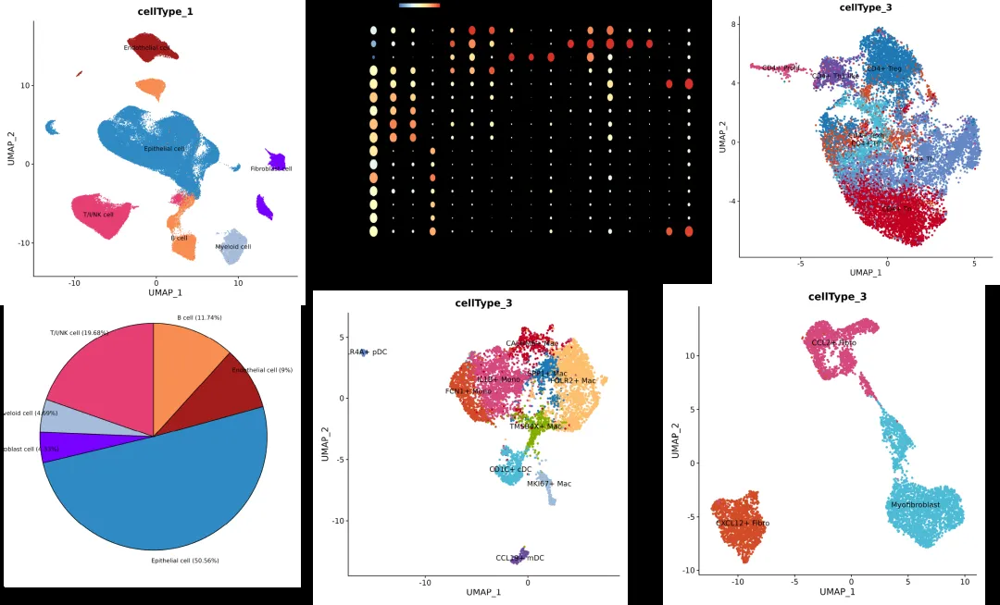
文献简介 ：投稿人未提供
一、复写内容
一、细胞过滤
1.1批量读取并绘制小提琴图：
由于样本多数据量大，这里只提供三个样本进行测试
library(Seurat)
library(MASS)
library(harmony)
library(clustree)
library(dplyr)
library(Matrix)
# setwd("~/project/01.lyh/03.result/")
samples = list.files("testdata")
samples
dir <- file.path('testdata', samples)
names(dir) <- samples
#合并方法1
counts <- Read10X(data.dir = dir)
scRNA1 = CreateSeuratObject(counts, min.cells = 0, min.features = 0)
# The [[ operator can add columns to object metadata. This is a great place to stash QC stats
scRNA1[["percent.mt"]] <-
PercentageFeatureSet(scRNA1, pattern = "^MT-")
dim(scRNA1) #查看基因数和细胞总数
# [1] 33538 324020
table(scRNA1@meta.data$orig.ident) #查看每个样本的细胞数
Idents(scRNA1) <- "orig.ident"
sub.list <- SplitObject(scRNA1, split.by = "orig.ident")
sub.list <- lapply(
X = sub.list,
FUN = function(x) {
# Visualize QC metrics as a violin plot
x <- VlnPlot(
x,
features = c("nFeature_RNA", "nCount_RNA", "percent.mt"),
ncol = 3,
)
# print(x)
}
)
ggsave_fun <- function(filename,plot = last_plot(),plot_Device=c('.png','.pdf'),width=7,height=7,dpi=600, ...) {
filenames <- paste0(filename,plot_Device)
for (filename_tmp in filenames) {
ggsave(filename = filename_tmp,plot=plot,width = width,height = height,dpi=dpi,...)
}
}
for(i in 1:length(sub.list)) {
ggsave_fun(filename = paste0("01.QC.filter/01.unfilter/",names(sub.list)[i],".vlnplot"),plot = sub.list[[i]])
}
1.2 样本初步过滤 初步过滤条件：
1. 少于三个细胞表达的基因；
2. 表达少于 500 个基因或大于 5000 个基因的细胞；
3. UMI 少于 400 或大于 25000 的细胞。
scRNA1 = CreateSeuratObject(counts, min.cells = 3, min.features = 500)
scRNA1 <-
subset(scRNA1, subset = nCount_RNA > 400 &
nCount_RNA < 25000 & nFeature_RNA < 5000)
scRNA1[["percent.mt"]] <- PercentageFeatureSet(scRNA1, pattern = "^MT-")
dim(scRNA1) #查看基因数和细胞总数
# [1] 27366 200662
table(scRNA1@meta.data$orig.ident) #查看每个样本的细胞数
# GSM6213956 GSM6213957 GSM6213958 GSM6213959 GSM6213960 GSM6213961 GSM6213962 GSM6213963 GSM6213964 GSM6213965 GSM6213966
# 913 3158 4648 5407 6289 11512 11222 2509 4083 6050 3956
# GSM6213967 GSM6213968 GSM6213969 GSM6213970 GSM6213971 GSM6213972 GSM6213973 GSM6213974 GSM6213975 GSM6213976 GSM6213977
# 7310 3571 1050 5645 7718 3295 4778 5882 4551 6835 3850
# GSM6213978 GSM6213979 GSM6213980 GSM6213981 GSM6213982 GSM6213983 GSM6213984 GSM6213985 GSM6213986 GSM6213987 GSM6213988
# 4531 4775 4105 2221 5198 4259 4618 3235 2954 3703 6143
# GSM6213989 GSM6213990 GSM6213991 GSM6213992 GSM6213993 GSM6213994 GSM6213995
# 8929 3303 2693 5549 5549 9218 5447
sub.list <- SplitObject(scRNA1, split.by = "orig.ident")
sub.list <- lapply(
X = sub.list,
FUN = function(x) {
# Visualize QC metrics as a violin plot
x <- VlnPlot(
x,
features = c("nFeature_RNA", "nCount_RNA", "percent.mt"),
ncol = 3,
)
# print(x)
}
)
for(i in 1:length(sub.list)) {
ggsave_fun(filename = paste0("01.QC.filter/02.filter/",names(sub.list)[i],".vlnplot"),plot = sub.list[[i]])
}
1.3 线粒体基因过滤：
对细胞进行注释，初步分出细胞类型，按不同细胞类型对线粒体基因进行过滤。总体而言，上皮细胞中线粒体基因占比超过 75%的将被除去，其他细胞中运用中位数绝对偏差（MAD）进行过滤。认为在区间[median - 3MAD, median + 3MAD]之外的值为离群值。考虑到能接受线粒体基因表达比例过低的细胞，因此，这里线粒体基因表达比例高于 median + 3*MAD的细胞认为是离群细胞，将被过滤。
Harmony.integration.reduceDimension <- function(seurat.object, set.resolutions, assay = "RNA", nfeatures = 3000, PC = 50, npcs = 100){
require(Seurat)
require(harmony)
require(clustree)
require(dplyr)
#OK nfeatures
DefaultAssay(seurat.object) <- assay
seurat.object <- NormalizeData(object = seurat.object)
seurat.object <- FindVariableFeatures(object = seurat.object, selection.method = "vst", nfeatures = nfeatures)
seurat.object <- ScaleData(object = seurat.object,vars.to.regress = "percent.mt")
seurat.object <- RunPCA(seurat.object, verbose = FALSE, npcs = npcs)
p <- ElbowPlot(object = seurat.object, ndims = npcs)
print(p)
#If dims.use is not specified, all PCs will be used by default
#assay.use defaults to RNA. If the SCTransform standardization method is used, you need to specify assay.use="SCT" in RunHarmony
#Compare the differences between the two modes and find that the default is better and more complete
seurat.object <- RunHarmony(object = seurat.object, group.by.vars = "orig.ident", assay.use=assay, verbose = FALSE)
seurat.object <- RunUMAP(seurat.object, reduction = "harmony", dims = 1:PC, verbose = FALSE)
seurat.object <- RunTSNE(seurat.object, reduction = "harmony", dims = 1:PC, verbose = FALSE)
seurat.object <- FindNeighbors(seurat.object, dims = 1:PC, reduction = "harmony", verbose = FALSE) #使用harmony替代PCA
seurat.object <- FindClusters(seurat.object, resolution = set.resolutions, verbose = FALSE)
p <- clustree(seurat.object)
print(p)
p <- DimPlot(object = seurat.object, reduction = 'umap',label = TRUE, group.by = "orig.ident")
print(p)
merge.res <- sapply(set.resolutions, function(x){
p <- DimPlot(object = seurat.object, reduction = 'umap',label = TRUE, group.by = paste0(assay, "_snn_res.", x)) + NoLegend()
print(p)
})
p <- DimPlot(object = seurat.object, reduction = 'tsne',label = TRUE, group.by = "orig.ident")
print(p)
merge.res <- sapply(set.resolutions, function(x){
p <- DimPlot(object = seurat.object, reduction = 'tsne',label = TRUE, group.by = paste0(assay, "_snn_res.", x)) + NoLegend()
print(p)
})
return(seurat.object)
}
pdf("01.QC.filter/03.mt.filter/data.merge.harmony.pdf")
data.merge.harmony <- Harmony.integration.reduceDimension(seurat.object = scRNA1, assay = "RNA", set.resolutions = seq(0.2, 1.2, by = 0.1), PC = 20, nfeatures = 2000, npcs = 30)
dev.off()
p <- DimPlot(data.merge.harmony,reduction = 'umap',group.by = 'RNA_snn_res.0.2',label = T,raster = F)+NoLegend()
ggsave_fun(filename = "01.QC.filter/03.mt.filter/data.merge.harmony.dimplot",plot = p,width = 7,height = 7)
p <- DotPlot(
data.merge.harmony,
features = c("CD3D", "CD3E", "TRAC","TRBC1",
"MS4A1", "CD79A", "CD79B","TNFRSF17","MZB1",
"CD14","CD68",
"VWF", "PECAM1",
"COL1A2", "COL3A1", "MYH11", "ACTA2",
"EPCAM", "CD24"),
group.by = "RNA_snn_res.0.2",
cols = c("#1e90ff", "#ff5a36")
) +theme(axis.text.x = element_text(angle = 90,hjust = 1,vjust = 0.5))
ggsave_fun(filename = "01.QC.filter/03.mt.filter/data.merge.harmony.dotplot",plot = p,width = 9,height = 5)
features <- c("CD3D", "CD3E", "TRAC","TRBC1")
for (i in features) {
p <- FeaturePlot(data.merge.harmony, cols = c("lightgrey", "red"),features = i,raster = F)
ggsave_fun(filename = paste0("01.QC.filter/03.mt.filter/T.cell/",i,".featureplot"),plot = p,width = 7,height = 7)
}
features <- c("MS4A1", "CD79A", "CD79B","TNFRSF17","MZB1")
for (i in features) {
p <- FeaturePlot(data.merge.harmony, cols = c("lightgrey", "red"),features = i,raster = F)
ggsave_fun(filename = paste0("01.QC.filter/03.mt.filter/B.cell/",i,".featureplot"),plot = p,width = 7,height = 7)
}
features <- c("CD14","CD68")
for (i in features) {
p <- FeaturePlot(data.merge.harmony, cols = c("lightgrey", "red"),features = i,raster = F)
ggsave_fun(filename = paste0("01.QC.filter/03.mt.filter/Myeloid.cell/",i,".featureplot"),plot = p,width = 7,height = 7)
}
features <- c("VWF", "PECAM1")
for (i in features) {
p <- FeaturePlot(data.merge.harmony, cols = c("lightgrey", "red"),features = i,raster = F)
ggsave_fun(filename = paste0("01.QC.filter/03.mt.filter/Endothelial.cell/",i,".featureplot"),plot = p,width = 7,height = 7)
}
features <- c("COL1A2", "COL3A1", "MYH11", "ACTA2")
for (i in features) {
p <- FeaturePlot(data.merge.harmony, cols = c("lightgrey", "red"),features = i,raster = F)
ggsave_fun(filename = paste0("01.QC.filter/03.mt.filter/Fibroblast.cell/",i,".featureplot"),plot = p,width = 7,height = 7)
}
features <- c("EPCAM", "CD24")
for (i in features) {
p <- FeaturePlot(data.merge.harmony, cols = c("lightgrey", "red"),features = i,raster = F)
ggsave_fun(filename = paste0("01.QC.filter/03.mt.filter/Epithelial.cell/",i,".featureplot"),plot = p,width = 7,height = 7)
}
{
pdf("01.QC.filter/T.cell.Featureplot.pdf")
FeaturePlot(data.merge.harmony, cols = c("lightgrey", "red"),features = c("CD3D", "CD3E", "TRAC","TRBC1"))
dev.off()
pdf("01.QC.filter/B.cell.Featureplot.pdf")
FeaturePlot(data.merge.harmony, cols = c("lightgrey", "red"),features = c("MS4A1", "CD79A", "CD79B","TNFRSF17","MZB1"))
dev.off()
pdf("01.QC.filter/Myeloid.cell.Featureplot.pdf")
FeaturePlot(data.merge.harmony, cols = c("lightgrey", "red"),features = c("CD14","CD68"))
dev.off()
pdf("01.QC.filter/Endothelial.cell.Featureplot.pdf")
FeaturePlot(data.merge.harmony, cols = c("lightgrey", "red"),features = c("VWF", "PECAM1"))
dev.off()
pdf("01.QC.filter/Fibroblast.cell.Featureplot.pdf")
FeaturePlot(data.merge.harmony, cols = c("lightgrey", "red"),features = c("COL1A2", "COL3A1", "MYH11", "ACTA2"))
dev.off()
pdf("01.QC.filter/Epithelial.cell.Featureplot.pdf")
FeaturePlot(data.merge.harmony, cols = c("lightgrey", "red"),features = c("EPCAM", "CD24"))
dev.off()
}
cluster.label <- data.merge.harmony@meta.data$RNA_snn_res.0.2
cluster.label <- gsub("^0$", "Epithelial cell", cluster.label)
cluster.label <- gsub("^1$", "T/I/NK cell", cluster.label)
cluster.label <- gsub("^2$", "Epithelial cell", cluster.label)
cluster.label <- gsub("^3$", "Epithelial cell", cluster.label)
cluster.label <- gsub("^4$", "B cell", cluster.label)
cluster.label <- gsub("^5$", "Endothelial cell", cluster.label)
cluster.label <- gsub("^6$", "Epithelial cell", cluster.label)
cluster.label <- gsub("^7$", "Myeloid cell", cluster.label)
cluster.label <- gsub("^8$", "B cell", cluster.label)
cluster.label <- gsub("^9$", "Epithelial cell", cluster.label)
cluster.label <- gsub("^10$", "Epithelial cell", cluster.label)
cluster.label <- gsub("^11$", "Fibroblast cell", cluster.label)
cluster.label <- gsub("^12$", "B cell", cluster.label)
cluster.label <- gsub("^13$", "Fibroblast cell", cluster.label)
cluster.label <- gsub("^14$", "Epithelial cell", cluster.label)
cluster.label <- gsub("^15$", "T/I/NK cell", cluster.label)
data.merge.harmony <- AddMetaData(data.merge.harmony, cluster.label, col.name = "cellType_low")
data.merge.harmony$cellType_low <- factor(data.merge.harmony$cellType_low, levels = unique(data.merge.harmony$cellType_low))
p <- DimPlot(data.merge.harmony,group.by = "cellType_low",raster=FALSE,label = T,cols = c("#F88D51",'#A31D1D',"#2F8AC4",'#7700FF', '#a6bddb',"#E73F74"))+NoLegend()
ggsave_fun(filename = paste0("01.QC.filter/03.mt.filter/cellAnnonted.dimplot"),plot = p,width = 7,height = 7)
medata.filter <- data.merge.harmony@meta.data
Epi <- medata.filter[medata.filter$cellType_low=='Epithelial cell' & medata.filter$percent.mt < 75,]
other <- medata.filter[-which(medata.filter$cellType_low == 'Epithelial cell'),]
mad_value <- mad(other$percent.mt)
lower_bound <- median(other$percent.mt - 3*mad_value)
upper_bound <- median(other$percent.mt + 3*mad_value)
# outlier_ind <- which(seurat_clean$percent.mito < lower_bound | seurat_clean$percent.mito > upper_bound)
# Set threshold
clean_data <- subset(other, percent.mt <= upper_bound)
print(nrow(clean_data))
cleaned_cell <- rbind(Epi,clean_data)
print(nrow(cleaned_cell))
data.merge.harmony.filter <- data.merge.harmony[,colnames(data.merge.harmony) %in% rownames(cleaned_cell)]
table(data.merge.harmony.filter$orig.ident)
# GSM6213956 GSM6213957 GSM6213958 GSM6213959 GSM6213960 GSM6213961 GSM6213962 GSM6213963 GSM6213964 GSM6213965 GSM6213966
# 699 1301 3856 4405 6027 11142 8796 1455 2306 5961 3596
# GSM6213967 GSM6213968 GSM6213969 GSM6213970 GSM6213971 GSM6213972 GSM6213973 GSM6213974 GSM6213975 GSM6213976 GSM6213977
# 7069 1971 1040 4228 7586 3097 2928 4983 3374 6146 3217
# GSM6213978 GSM6213979 GSM6213980 GSM6213981 GSM6213982 GSM6213983 GSM6213984 GSM6213985 GSM6213986 GSM6213987 GSM6213988
# 3511 2769 3847 1502 2839 3746 3613 1718 2286 2293 5253
# GSM6213989 GSM6213990 GSM6213991 GSM6213992 GSM6213993 GSM6213994 GSM6213995
# 8307 1374 2385 3916 3346 8939 5172
saveRDS(data.merge.harmony.filter,"01.QC.filter/data.merge.harmony.2000.160000.rds")
Idents(data.merge.harmony.filter) <- "orig.ident"
sub.list <- SplitObject(data.merge.harmony.filter, split.by = "orig.ident")
sub.list <- lapply(
X = sub.list,
FUN = function(x) {
# Visualize QC metrics as a violin plot
x <- VlnPlot(
x,
features = c("nFeature_RNA", "nCount_RNA", "percent.mt"),
ncol = 3,
)
# print(x)
}
)
for(i in 1:length(sub.list)) {
ggsave_fun(filename = paste0("01.QC.filter/03.mt.filter/vlnplot/",names(sub.list)[i],".vlnplot"),plot = sub.list[[i]])
}
1.4 注释过程中过滤：
在过滤完上述细胞后，将进行细胞注释工作，重新降维聚类后，发现某些细胞簇中线粒 体基因占比高的细胞聚集在一起，这类细胞簇将被删去。在进行细胞注释过程中，某些细胞簇表达的marker并不明显或与两个及以上细胞类型的marker重合（除较难区分的细胞类型外），将考虑为双细胞，将被删去。最终保留149606个细胞。
二、细胞注释
根据原文提供的marker共注释出六种主要的细胞类型，分别有免疫细胞、B细胞、髓系细胞、成纤维细胞、内皮细胞和上皮细胞。marker基因以及注释出的细胞类型如下列图表所示：
| CellType | CellMarker |
|---|---|
| T/I/ NK | CD3D;CD3E |
| B | MS4A1;CD79A |
| Myeloid | CD14;CD68 |
| Fibroblast | COL1A2;COL3A1 |
| Epithelial | EPCAM;CD24 |
| Endothelial | VWF;PECAM1 |
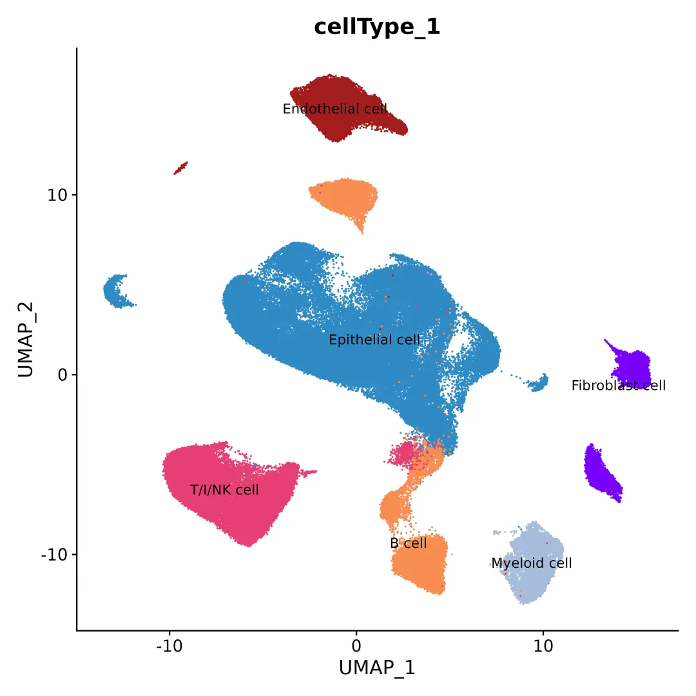 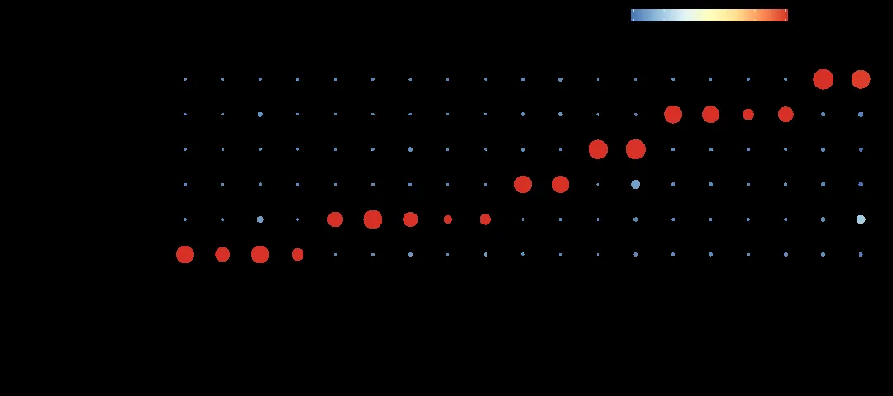 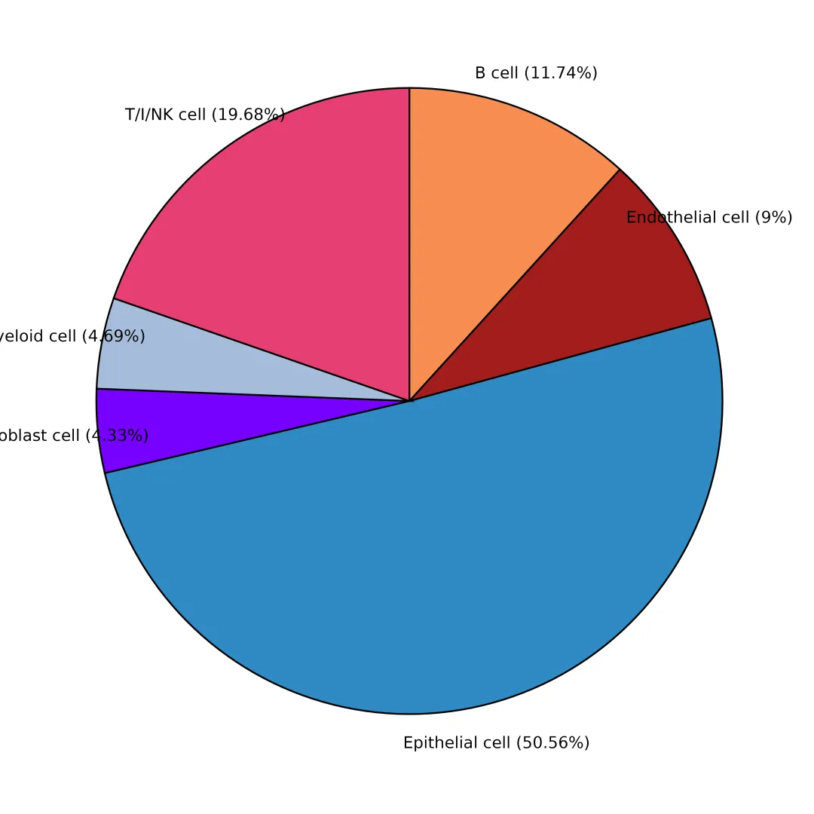 |
# setwd("~/project/01.lyh/03.result/")
data.merge.harmony <- readRDS("01.QC.filter/data.merge.harmony.2000.160000.rds")
Harmony.integration.reduceDimension <- function(seurat.object, set.resolutions, assay = "RNA", nfeatures = 3000, PC = 50, npcs = 100){
require(Seurat)
require(harmony)
require(clustree)
require(dplyr)
#OK nfeatures
DefaultAssay(seurat.object) <- assay
seurat.object <- NormalizeData(object = seurat.object)
seurat.object <- FindVariableFeatures(object = seurat.object, selection.method = "vst", nfeatures = nfeatures)
seurat.object <- ScaleData(object = seurat.object,vars.to.regress = "percent.mt")
seurat.object <- RunPCA(seurat.object, verbose = FALSE, npcs = npcs)
p <- ElbowPlot(object = seurat.object, ndims = npcs)
print(p)
#If dims.use is not specified, all PCs will be used by default
#assay.use defaults to RNA. If the SCTransform standardization method is used, you need to specify assay.use="SCT" in RunHarmony
#Compare the differences between the two modes and find that the default is better and more complete
seurat.object <- RunHarmony(object = seurat.object, group.by.vars = "orig.ident", assay.use=assay, verbose = FALSE)
seurat.object <- RunUMAP(seurat.object, reduction = "harmony", dims = 1:PC, verbose = FALSE)
seurat.object <- RunTSNE(seurat.object, reduction = "harmony", dims = 1:PC, verbose = FALSE)
seurat.object <- FindNeighbors(seurat.object, dims = 1:PC, reduction = "harmony", verbose = FALSE) #d=?g(harmonyf?d;#PCA
seurat.object <- FindClusters(seurat.object, resolution = set.resolutions, verbose = FALSE)
p <- clustree(seurat.object)
print(p)
p <- DimPlot(object = seurat.object, reduction = 'umap',label = TRUE, group.by = "orig.ident",raster = F)
print(p)
merge.res <- sapply(set.resolutions, function(x){
p <- DimPlot(object = seurat.object, reduction = 'umap',label = TRUE, group.by = paste0(assay, "_snn_res.", x),raster = F) + NoLegend()
print(p)
})
p <- DimPlot(object = seurat.object, reduction = 'tsne',label = TRUE, group.by = "orig.ident",raster = F)
print(p)
merge.res <- sapply(set.resolutions, function(x){
p <- DimPlot(object = seurat.object, reduction = 'tsne',label = TRUE, group.by = paste0(assay, "_snn_res.", x),raster = F) + NoLegend()
print(p)
})
return(seurat.object)
}
pdf("02.CellAnnote/data.merge.harmony.pdf")
data.merge.harmony <- Harmony.integration.reduceDimension(seurat.object = data.merge.harmony, assay = "RNA", set.resolutions = seq(0.2, 1.2, by = 0.1), PC = 20, nfeatures = 2000, npcs = 30)
dev.off()
p <- DimPlot(data.merge.harmony,reduction = 'umap',group.by = 'RNA_snn_res.1',label = T,raster = F)+NoLegend()
ggsave_fun(filename = "02.CellAnnote/data.merge.harmony.dimplot",plot = p,width = 7,height = 7)
p <- DotPlot(
data.merge.harmony,
features = c("CD3D", "CD3E", "TRAC","TRBC1",
"MS4A1", "CD79A", "CD79B","TNFRSF17","MZB1",
"CD14","CD68",
"VWF", "PECAM1",
"COL1A2", "COL3A1", "MYH11", "ACTA2",
"EPCAM", "CD24"),
group.by = "RNA_snn_res.1",
cols = c("#1e90ff", "#ff5a36")
) +theme(axis.text.x = element_text(angle = 90,hjust = 1,vjust = 0.5))
ggsave_fun(filename = "02.CellAnnote/data.merge.harmony.dotplot",plot = p,width = 7,height = 9)
#FeaturePlot(data.merge.harmony, cols = c("lightgrey", "red"),features = "CD2",raster = F)
features <- c("CD3D", "CD3E", "TRAC","TRBC1")
for (i in features) {
p <- FeaturePlot(data.merge.harmony, cols = c("lightgrey", "red"),features = i,raster = F)
ggsave_fun(filename = paste0("02.CellAnnote/T.cell/",i,".featureplot"),plot = p,width = 7,height = 7)
}
features <- c("MS4A1", "CD79A", "CD79B","TNFRSF17","MZB1")
for (i in features) {
p <- FeaturePlot(data.merge.harmony, cols = c("lightgrey", "red"),features = i,raster = F)
ggsave_fun(filename = paste0("02.CellAnnote/B.cell/",i,".featureplot"),plot = p,width = 7,height = 7)
}
features <- c("CD14","CD68")
for (i in features) {
p <- FeaturePlot(data.merge.harmony, cols = c("lightgrey", "red"),features = i,raster = F)
ggsave_fun(filename = paste0("02.CellAnnote/Myeloid.cell/",i,".featureplot"),plot = p,width = 7,height = 7)
}
features <- c("VWF", "PECAM1")
for (i in features) {
p <- FeaturePlot(data.merge.harmony, cols = c("lightgrey", "red"),features = i,raster = F)
ggsave_fun(filename = paste0("02.CellAnnote/Endothelial.cell/",i,".featureplot"),plot = p,width = 7,height = 7)
}
features <- c("COL1A2", "COL3A1", "MYH11", "ACTA2")
for (i in features) {
p <- FeaturePlot(data.merge.harmony, cols = c("lightgrey", "red"),features = i,raster = F)
ggsave_fun(filename = paste0("02.CellAnnote/Fibroblast.cell/",i,".featureplot"),plot = p,width = 7,height = 7)
}
features <- c("EPCAM", "CD24")
for (i in features) {
p <- FeaturePlot(data.merge.harmony, cols = c("lightgrey", "red"),features = i,raster = F)
ggsave_fun(filename = paste0("02.CellAnnote/Epithelial.cell/",i,".featureplot"),plot = p,width = 7,height = 7)
}
cluster.label <- data.merge.harmony@meta.data$RNA_snn_res.1
cluster.label <- gsub("^0$", "T/I/NK cell", cluster.label)
cluster.label <- gsub("^1$", "B cell", cluster.label)
cluster.label <- gsub("^2$", "T/I/NK cell", cluster.label)
cluster.label <- gsub("^3$", "Epithelial cell", cluster.label)
cluster.label <- gsub("^4$", "Myeloid cell", cluster.label)
cluster.label <- gsub("^5$", "Epithelial cell", cluster.label)
cluster.label <- gsub("^6$", "Epithelial cell", cluster.label)
cluster.label <- gsub("^7$", "Endothelial cell", cluster.label)
cluster.label <- gsub("^8$", "Epithelial cell", cluster.label)
cluster.label <- gsub("^9$", "Epithelial cell", cluster.label)
cluster.label <- gsub("^10$", "Epithelial cell", cluster.label)
cluster.label <- gsub("^11$", "Epithelial cell", cluster.label)
cluster.label <- gsub("^12$", "B cell", cluster.label)
cluster.label <- gsub("^13$", "Epithelial cell", cluster.label)
cluster.label <- gsub("^14$", "Epithelial cell", cluster.label)
cluster.label <- gsub("^15$", "Fibroblast cell", cluster.label)
cluster.label <- gsub("^16$", "Epithelial cell", cluster.label)
cluster.label <- gsub("^17$", "Endothelial cell", cluster.label)
cluster.label <- gsub("^18$", "Fibroblast cell", cluster.label)
cluster.label <- gsub("^19$", "Endothelial cell", cluster.label)
cluster.label <- gsub("^20$", "Epithelial cell", cluster.label)
cluster.label <- gsub("^21$", "B cell", cluster.label)
cluster.label <- gsub("^22$", "Epithelial cell", cluster.label)
cluster.label <- gsub("^23$", "B cell", cluster.label)
cluster.label <- gsub("^24$", "T/I/NK cell", cluster.label)
cluster.label <- gsub("^25$", "Epithelial cell", cluster.label)
cluster.label <- gsub("^26$", "Epithelial cell", cluster.label)
cluster.label <- gsub("^27$", "T/I/NK cell", cluster.label)
cluster.label <- gsub("^28$", "T/I/NK cell", cluster.label)
cluster.label <- gsub("^29$", "B cell", cluster.label)
cluster.label <- gsub("^30$", "B cell", cluster.label)
cluster.label <- gsub("^31$", "Endothelial cell", cluster.label)
cluster.label <- gsub("^32$", "Endothelial cell", cluster.label)
cluster.label <- gsub("^33$", "Epithelial cell", cluster.label)
data.merge.harmony <- AddMetaData(data.merge.harmony, cluster.label, col.name = "cellType_1")
data.merge.harmony$cellType_1 <- factor(data.merge.harmony$cellType_1, levels = unique(data.merge.harmony$cellType_1))
p <- DimPlot(data.merge.harmony,group.by = "cellType_1",raster=FALSE,label = T,cols = c("#F88D51",'#A31D1D',"#2F8AC4",'#7700FF', '#a6bddb',"#E73F74"))+NoLegend()
ggsave_fun(filename = paste0("02.CellAnnote/cellAnnonted.dimplot"),plot = p,width = 7,height = 7)
DotPlot(
data.merge.harmony,
features = c("CD3D", "CD3E", "TRAC","TRBC1",
"MS4A1", "CD79A", "CD79B","TNFRSF17","MZB1",
"CD14","CD68",
"VWF", "PECAM1",
"COL1A2", "COL3A1", "MYH11", "ACTA2",
"EPCAM", "CD24"),
group.by = "cellType_1",
cols = c("#1e90ff", "#ff5a36")
) +theme(axis.text.x = element_text(angle = 90,hjust = 1,vjust = 0.5))
saveRDS(data.merge.harmony,"02.CellAnnote/cellAnnote.cellType_1.rds")
2.1 T/I/NK 细胞注释：
| CellType | Marker | Marker | Marker | Marker | Marker | Marker | Marker | Marker |
|---|---|---|---|---|---|---|---|---|
| CD4 + T | Texh | CD4 | RGS1 | LTB | TIGIT | |||
| Tfh| CD4| ICA1| TOX2| IL6ST| FKBP5| |
| Th| CD4| IL7R| CD40LG| | | |
| Th1-like| CD4| KLRB1| MAF| PDCD1| CXCL13| |
| Tn| CD4| CCR7| SELL| LEF1| | |
| Treg| CD4| TNFRSF4| TNFRSF18| IL2RA| BATF| FOXP3| CTLA4
| Prolif| CD4| MKI67| STMN1| | | |
CD8 + T| IEL| CD8A| CD8B| NR4A1| NR4A2| CD69| CD160|
| MAIT| CD8A| CD8B| HOPX| KLRB1| TMIGD2| |
| Tem| CD8A| CD8B| GZMK| CMC1| CST7| KLRG1|
| Trm| CD8A| CD8B| ITGAE| GNLY| CCL4| LAG3| GZMB
| Trm-mitotic| CD8A| CD8B| MKI67| STMN1| | |
γδT| γδT| TRGC1| TRGC2| TRDC| | | |
ILC3| ILC3| KRT86| KIT| LST1| | | |
NK| NK-FGBP2| FGFBP2| TYROBP| GNLY| FCGR3A| KLRF1| KLRD1| KLRC1
| NK-GNLY| FGFBP2| TYROBP| GNLY| FCGR3A| KLRF1| KLRD1| KLRC1
setwd("~/project/01.lyh/03.result/")
data.merge <-readRDS("02.CellAnnote/cellAnnote.cellType_1.rds")
#data.merge <- data.merge.harmony
T.cell <- subset(data.merge,subset = cellType_1 == "T/I/NK cell")
DimPlot(T.cell,group.by = "RNA_snn_res.1",label = T)
pdf("02.CellAnnote/T.cell/T.cell.harmony.pdf")
T.cell.harmony <- Harmony.integration.reduceDimension(seurat.object = T.cell, assay = "RNA", set.resolutions = seq(0.2, 1.2, by = 0.1), PC = 10, npcs = 15)
dev.off()
table(T.cell.harmony$seurat_clusters)
clustree(T.cell.harmony)
DimPlot(T.cell.harmony,group.by = "RNA_snn_res.0.6",label = T)
features <- c("CD3D")
for (i in features) {
p <- FeaturePlot(T.cell.harmony, cols = c("lightgrey", "red"),features = i,raster = F)
ggsave_fun(filename = paste0("02.CellAnnote/T.cell/",i,".featureplot"),plot = p,width = 7,height = 7)
}
features <- c("CD8A","CD8B")
for (i in features) {
p <- FeaturePlot(T.cell.harmony, cols = c("lightgrey", "red"),features = i,raster = F)
ggsave_fun(filename = paste0("02.CellAnnote/T.cell/CD8/",i,".featureplot"),plot = p,width = 7,height = 7)
}
features <- c("CD4")
for (i in features) {
p <- FeaturePlot(T.cell.harmony, cols = c("lightgrey", "red"),features = i,raster = F)
ggsave_fun(filename = paste0("02.CellAnnote/T.cell/CD4/",i,".featureplot"),plot = p,width = 7,height = 7)
}
features <- c("TRGC1","TRGC2","TRDC","KLRC2")
for (i in features) {
p <- FeaturePlot(T.cell.harmony, cols = c("lightgrey", "red"),features = i,raster = F)
ggsave_fun(filename = paste0("02.CellAnnote/T.cell/γδT/",i,".featureplot"),plot = p,width = 7,height = 7)
}
features <- c("KRT86","KIT","LST1")
for (i in features) {
p <- FeaturePlot(T.cell.harmony, cols = c("lightgrey", "red"),features = i,raster = F)
ggsave_fun(filename = paste0("02.CellAnnote/T.cell/ILC3/",i,".featureplot"),plot = p,width = 7,height = 7)
}
features <- c("FGFBP2","TYROBP","GNLY","FCGR3A","KLRF1","KLRD1","KLRC1")
for (i in features) {
p <- FeaturePlot(T.cell.harmony, cols = c("lightgrey", "red"),features = i,raster = F)
ggsave_fun(filename = paste0("02.CellAnnote/T.cell/NK/",i,".featureplot"),plot = p,width = 7,height = 7)
}
features <- c("MKI67","STMN1")
for (i in features) {
p <- FeaturePlot(T.cell.harmony, cols = c("lightgrey", "red"),features = i,raster = F)
ggsave_fun(filename = paste0("02.CellAnnote/T.cell/Prolif/",i,".featureplot"),plot = p,width = 7,height = 7)
}
# pdf("02.CellAnnote/T.cell/T.featureplot.pdf",height = 100)
# FeaturePlot(T.cell.harmony,
# features = c("CD3D",
# "CD8A","CD8B",
# "CD4",
# "TRGC1","TRGC2","TRDC","KLRC2",
# "KRT86","KIT","LST1",
# "FGFBP2","TYROBP","GNLY","FCGR3A","KLRF1","KLRD1","KLRC1",
# "MKI67","STMN1"),
# ncol = 1,
# cols = c("lightgrey", "red"))
# dev.off()
pdf("02.CellAnnote/T.cell/T.dotplot.pdf",width = 15)
DotPlot(
T.cell.harmony,
features = c("CD3D",
"CD8A","CD8B",
"CD4",
"TRGC1","TRGC2","TRDC","KLRC2",
"KRT86","KIT","LST1",
"FGFBP2","TYROBP","GNLY","FCGR3A","KLRF1","KLRD1","KLRC1",
"MKI67","STMN1"),
group.by = "RNA_snn_res.0.8",
cols = c("lightgrey", "red")
)
dev.off()
DimPlot(T.cell.harmony,group.by = "RNA_snn_res.0.8",label = T)
# FeaturePlot(T.cell.harmony,
# features = c("KLRD1", "KLRC1", "FCGR3A", "TYROBP"),
# cols = c("lightgrey", "red")
# )
Idents(T.cell.harmony) <- 'RNA_snn_res.0.8'
sub.Fibro.markers <- FindAllMarkers(T.cell.harmony,only.pos = TRUE, min.pct = 0.25, logfc.threshold = 0.25)
sub.Fibro.markers %>%
group_by(cluster) %>%
slice_max(n = 2, order_by = avg_log2FC)
write.csv(sub.Fibro.markers,"02.CellAnnote/T.cell/Findall.markers.csv")
head(subset(sub.Fibro.markers,cluster == 11))
head(subset(sub.Fibro.markers,cluster == 12))
cluster.label <- T.cell.harmony@meta.data$RNA_snn_res.0.8
cluster.label <- gsub("^0$", "CD4+ T", cluster.label)
cluster.label <- gsub("^1$", "CD8+ T", cluster.label)
cluster.label <- gsub("^2$", "NK cell", cluster.label)
cluster.label <- gsub("^3$", "CD4+ T", cluster.label)
cluster.label <- gsub("^4$", "γδ T", cluster.label)
cluster.label <- gsub("^5$", "CD8+ T", cluster.label)
cluster.label <- gsub("^6$", "CD4+ T", cluster.label)
cluster.label <- gsub("^7$", "CD4+ T", cluster.label)
cluster.label <- gsub("^8$", "CD8+ T", cluster.label)
cluster.label <- gsub("^9$", "CD4+ T", cluster.label)
cluster.label <- gsub("^10$", "Prolif cell", cluster.label)
cluster.label <- gsub("^11$", "Epithelial cell", cluster.label)
cluster.label <- gsub("^12$", "B cell", cluster.label)
cluster.label <- gsub("^13$", "Prolif cell", cluster.label)
cluster.label <- gsub("^14$", "CD4+ T", cluster.label)
cluster.label <- gsub("^15$", "ILC3", cluster.label)
T.cell.harmony <- AddMetaData(T.cell.harmony, cluster.label, col.name = "cellType_2")
# Remove cells that cannot be annotated or the cell number less than 100 cells
T.cell.harmony <- subset(T.cell.harmony, subset = RNA_snn_res.0.8 %in% c(0:10, 13:15))
T.cell.harmony$RNA_snn_res.0.8 <- factor(T.cell.harmony$RNA_snn_res.0.8, levels = c(0:10, 13:15))
DotPlot(
T.cell.harmony,
features = c("CD3D",
"CD8A","CD8B",
"CD4",
"TRGC1","TRGC2","TRDC","KLRC2",
"KRT86","KIT","LST1",
"FGFBP2","TYROBP","GNLY","FCGR3A","KLRF1","KLRD1","KLRC1",
"MKI67","STMN1"),
group.by = "RNA_snn_res.0.8",
cols = "RdYlBu") + theme(axis.text.x = element_text(
angle = 90,
hjust = 1,
vjust = 0.5
)) + scale_size_continuous(range = c(0, 10))
saveRDS(T.cell.harmony, "02.CellAnnote/T.cell/cellAnnote.cellType_2.rds")
# cluster12 <- CellSelector(DimPlot(T.cell.harmony,cells = WhichCells(T.cell.harmony,idents = '9')))
# T.cell.harmony@meta.data$cellType_2 <- ifelse(rownames(medata) %in% cluster12 ,"ILC3",T.cell.harmony@meta.data$cellType_2)
table(T.cell.harmony@meta.data$cellType_2)
# CD4+ T CD8+ T ILC3 NK cell Prolif cell γδ T
# 13216 8396 199 3582 1407 3005
# pdf("02.CellAnnote/T.cell/01.T.Annonted.pdf")
# DimPlot(T.cell.harmony,group.by = "cellType_2",label = T)+NoLegend()
# dev.off()
Idents(T.cell.harmony) <- 'cellType_2'
T.cell.harmony.markers <- FindAllMarkers(T.cell.harmony,only.pos = TRUE, min.pct = 0.25, logfc.threshold = 0.25)
T.cell.harmony.markers %>%
group_by(cluster) %>%
slice_max(n = 2, order_by = avg_log2FC)
write.csv(T.cell.harmony.markers,"02.CellAnnote/T.cell/T.cell.harmony.markers.csv")
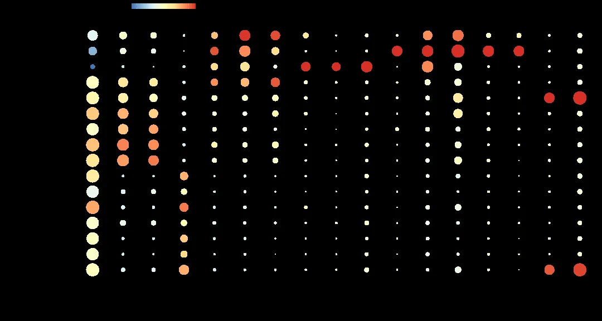
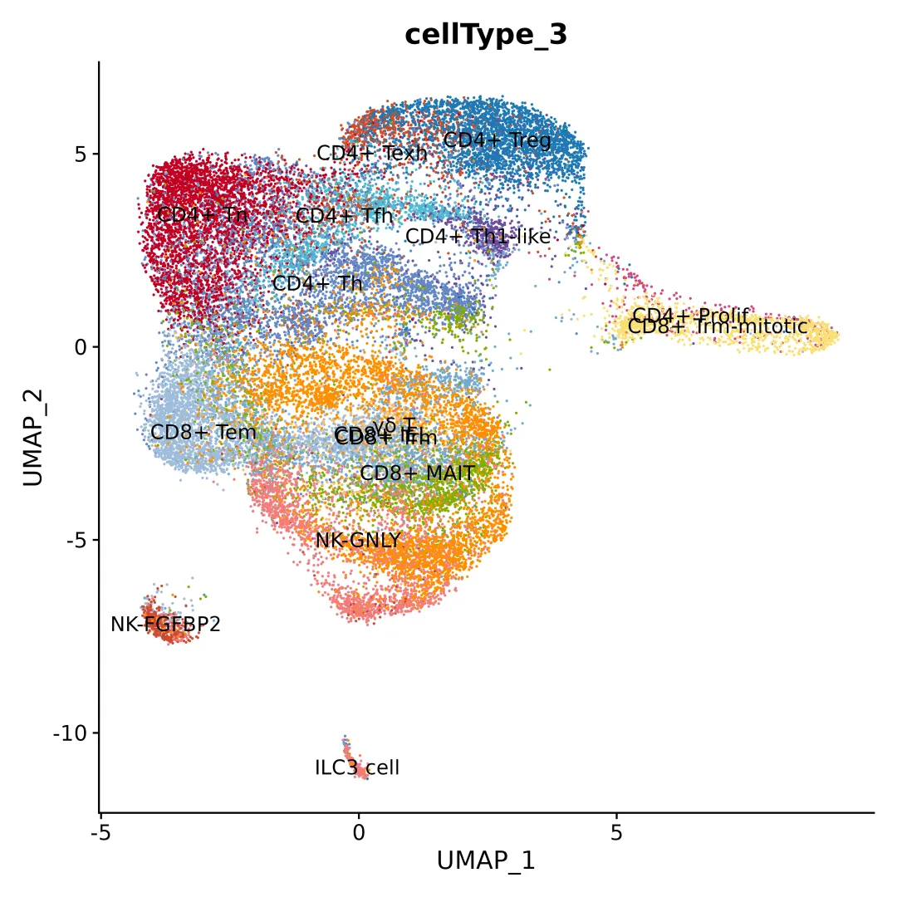
2.1.1 CD4+ T 细胞分群
T.cell.harmony <- readRDS("02.CellAnnote/T.cell/T.Annonted.rds")
sub.CD4 <- subset(T.cell.harmony,subset = cellType_2 == "CD4+ T")
pdf("02.CellAnnote/T.cell/CD4/CD4.cell.harmony.pdf")
sub.CD4 <- Harmony.integration.reduceDimension(seurat.object = sub.CD4, assay = "RNA", set.resolutions = seq(0.2, 1.2, by = 0.1), PC = 15, npcs = 20)
dev.off()
DimPlot(sub.CD4,label = T)+NoLegend()
#Treg
features <- c("TNFRSF4", "TNFRSF18", "IL2RA", "BATF", "FOXP3", "CTLA4")
for (i in features) {
p <- FeaturePlot(sub.CD4, cols = c("lightgrey", "red"),features = i,raster = F)
ggsave_fun(filename = paste0("02.CellAnnote/T.cell/CD4/Treg/",i,".featureplot"),plot = p,width = 7,height = 7)
}
#Tn
features <- c("CCR7", "SELL", "LEF1")
for (i in features) {
p <- FeaturePlot(sub.CD4, cols = c("lightgrey", "red"),features = i,raster = F)
ggsave_fun(filename = paste0("02.CellAnnote/T.cell/CD4/Tn/",i,".featureplot"),plot = p,width = 7,height = 7)
}
#Th
features <- c("IL7R",
"CD40LG")
for (i in features) {
p <- FeaturePlot(sub.CD4, cols = c("lightgrey", "red"),features = i,raster = F)
ggsave_fun(filename = paste0("02.CellAnnote/T.cell/CD4/Th/",i,".featureplot"),plot = p,width = 7,height = 7)
}
#Th1-like
features <- c("KLRB1",
"MAF", "PDCD1", "CXCL13")
for (i in features) {
p <- FeaturePlot(sub.CD4, cols = c("lightgrey", "red"),features = i,raster = F)
ggsave_fun(filename = paste0("02.CellAnnote/T.cell/CD4/Th1-like/",i,".featureplot"),plot = p,width = 7,height = 7)
}
#Tfh
features <- c("ICA1", "TOX2", "IL6ST", "FKBP5")
for (i in features) {
p <- FeaturePlot(sub.CD4, cols = c("lightgrey", "red"),features = i,raster = F)
ggsave_fun(filename = paste0("02.CellAnnote/T.cell/CD4/Tfh/",i,".featureplot"),plot = p,width = 7,height = 7)
}
#Texh
features <- c("RGS1", "LTB", "TIGIT")
for (i in features) {
p <- FeaturePlot(sub.CD4, cols = c("lightgrey", "red"),features = i,raster = F)
ggsave_fun(filename = paste0("02.CellAnnote/T.cell/CD4/Texh/",i,".featureplot"),plot = p,width = 7,height = 7)
}
DimPlot(sub.CD4,label = T)+NoLegend()
DotPlot(sub.CD4,features = c("TNFRSF4","TNFRSF18","IL2RA","BATF","FOXP3","CTLA4",
"IL7R",
"CD40LG","ICA1","TOX2","IL6ST","FKBP5",
"KLRB1",
"MAF","PDCD1","CXCL13",
"RGS1","LTB","TIGIT",
"CCR7","SELL","LEF1",
"TOP2A","MKI67","UBE2C"),
group.by = "RNA_snn_res.0.8",
cols = "RdYlBu") + theme(axis.text.x = element_text(
angle = 90,
hjust = 1,
vjust = 0.5
)) + scale_size_continuous(range = c(0, 10))
# pdf("02.CellAnnote/T.cell/CD4/all.feauture")
# FeaturePlot(sub.CD4,features = c("TNFRSF4","TNFRSF18","IL2RA","BATF","FOXP3","CTLA4",
# "IL7R",
# "CD40LG","ICA1","TOX2","IL6ST","FKBP5",
# "KLRB1",
# "MAF","PDCD1","CXCL13",
# "RGS1","LTB","TIGIT",
# "CCR7","SELL","LEF1",
# "TOP2A","MKI67","UBE2C"),
# cols = c("lightgrey", "red"))
cluster.label <- sub.CD4@meta.data$RNA_snn_res.0.8
cluster.label <- gsub("^0$", "CD4+ Tn", cluster.label)
cluster.label <- gsub("^1$", "CD4+ Treg", cluster.label)
cluster.label <- gsub("^2$", "CD4+ Tn", cluster.label)
cluster.label <- gsub("^3$", "CD4+ Th", cluster.label)
cluster.label <- gsub("^4$", "CD4+ Tfh", cluster.label)
cluster.label <- gsub("^5$", "CD4+ Th", cluster.label)
cluster.label <- gsub("^6$", "CD4+ Treg", cluster.label)
cluster.label <- gsub("^7$", "CD4+ Th1-like", cluster.label)
cluster.label <- gsub("^8$", "CD4+ Th", cluster.label)
cluster.label <- gsub("^9$", "CD4+ Th", cluster.label)
cluster.label <- gsub("^10$", "CD4+ Texh", cluster.label)
cluster.label <- gsub("^11$", "CD4+ Texh", cluster.label)
cluster.label <- gsub("^12$", "CD4+ Texh", cluster.label)
cluster.label <- gsub("^13$", "CD4+ Th", cluster.label)
cluster.label <- gsub("^14$", "CD4+ Th", cluster.label)
cluster.label <- gsub("^15$", "CD4+ Texh", cluster.label)
sub.CD4 <- AddMetaData(sub.CD4, cluster.label, col.name = "cellType_3")
DimPlot(sub.CD4,group.by = "cellType_3",label = T)+NoLegend()
table(sub.CD4$cellType_3)
# CD4+ Treg CD4+ Th CD4+ Tfh CD4+ Th1-like CD4+ Texh CD4+ Tn
# 2746 3958 1248 796 1131 3337
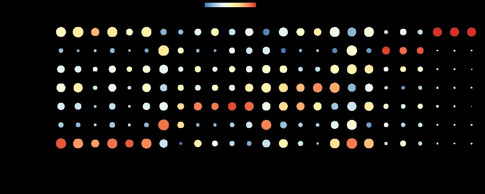
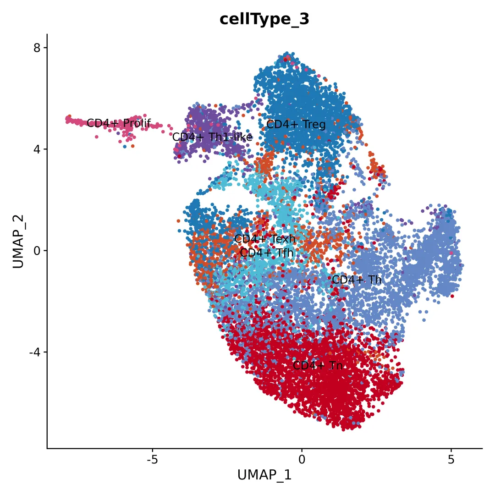
2.1.2 CD8+ T 细胞分群
sub.CD8 <- subset(T.cell.harmony,subset = cellType_2 == "CD8+ T")
DimPlot(sub.CD8,group.by = "RNA_snn_res.1",label = T)
pdf("02.CellAnnote/T.cell/CD8/CD8.cell.harmony.pdf")
sub.CD8 <- Harmony.integration.reduceDimension(seurat.object = sub.CD8, assay = "RNA", set.resolutions = seq(0.2, 1.2, by = 0.1), PC = 15, npcs = 20)
dev.off()
DimPlot(sub.CD8,label = T)+NoLegend()
#IEL
features <- c("NR4A1", "NR4A2", "CD69", "CD160")
for (i in features) {
p <- FeaturePlot(sub.CD8, cols = c("lightgrey", "red"),features = i,raster = F)
ggsave_fun(filename = paste0("02.CellAnnote/T.cell/CD8/IEL/",i,".featureplot"),plot = p,width = 7,height = 7)
}
#MAIT
features <- c("HOPX", "KLRB1", "TMIGD2")
for (i in features) {
p <- FeaturePlot(sub.CD8, cols = c("lightgrey", "red"),features = i,raster = F)
ggsave_fun(filename = paste0("02.CellAnnote/T.cell/CD8/MAIT/",i,".featureplot"),plot = p,width = 7,height = 7)
}
#Tem
features <- c("GZMK",
"CMC1",
"CST7",
"KLRG1")
for (i in features) {
p <- FeaturePlot(sub.CD8, cols = c("lightgrey", "red"),features = i,raster = F)
ggsave_fun(filename = paste0("02.CellAnnote/T.cell/CD8/Tem/",i,".featureplot"),plot = p,width = 7,height = 7)
}
#Trm
features <- c("ITGAE",
"GNLY", "CCL4", "CXCL13","GZMB","LAG3","PDCD1")
for (i in features) {
p <- FeaturePlot(sub.CD8, cols = c("lightgrey", "red"),features = i,raster = F)
ggsave_fun(filename = paste0("02.CellAnnote/T.cell/CD8/Trm/",i,".featureplot"),plot = p,width = 7,height = 7)
}
#Trm-mitotic
features <- c("STMN1", "MKI67", "UBE2C", "HMGB2","PCLAF")
for (i in features) {
p <- FeaturePlot(sub.CD8, cols = c("lightgrey", "red"),features = i,raster = F)
ggsave_fun(filename = paste0("02.CellAnnote/T.cell/CD8/Trm-mitotic/",i,".featureplot"),plot = p,width = 7,height = 7)
}
DimPlot(sub.CD8,label = T)+NoLegend()
DotPlot(sub.CD8,features = c("NR4A1", "NR4A2", "CD69", "CD160",
"HOPX", "KLRB1", "TMIGD2",
"GZMK","CMC1","CST7","KLRG1",
"ITGAE","GNLY", "CCL4", "CXCL13","GZMB","LAG3","PDCD1",
"STMN1", "MKI67", "UBE2C", "HMGB2","PCLAF"
),
group.by = "RNA_snn_res.0.5",
cols = c("#1e90ff", "#ff5a36"))
cluster.label <- sub.CD8@meta.data$RNA_snn_res.0.5
cluster.label <- gsub("^0$", "CD8+ Trm", cluster.label)
cluster.label <- gsub("^1$", "CD8+ Tem", cluster.label)
cluster.label <- gsub("^2$", "CD8+ MAIT", cluster.label)
cluster.label <- gsub("^3$", "CD8+ IEL", cluster.label)
cluster.label <- gsub("^4$", "CD8+ Tem", cluster.label)
cluster.label <- gsub("^5$", "CD8+ Trm", cluster.label)
cluster.label <- gsub("^6$", "CD8+ MAIT", cluster.label)
cluster.label <- gsub("^7$", "CD8+ Tem", cluster.label)
cluster.label <- gsub("^8$", "CD8+ Tem", cluster.label)
cluster.label <- gsub("^9$", "CD8+ Trm", cluster.label)
cluster.label <- gsub("^10$", "CD8+ Tem", cluster.label)
sub.CD8 <- AddMetaData(sub.CD8, cluster.label, col.name = "cellType_3")
table(sub.CD8$cellType_3)
# CD8+ IEL CD8+ MAIT CD8+ Tem CD8+ Trm
# 911 2043 3105 2337
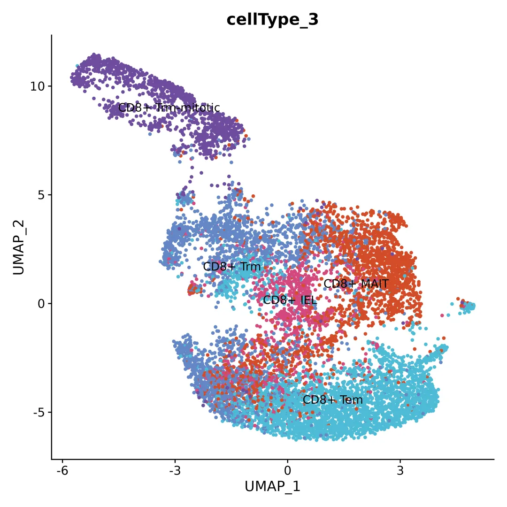
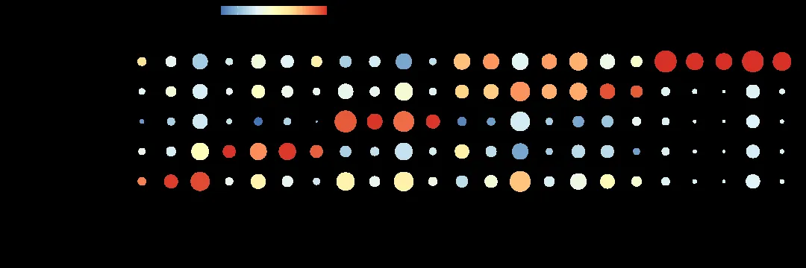
2.1.3 其他 T 细胞分群
# Prolif <- readRDS("02.CellAnnote/T.cell/cellAnnote.cellType_2.rds")
Prolif <- subset(T.cell.harmony,subset = cellType_2 == "Prolif cell")
DimPlot(Prolif,group.by = "RNA_snn_res.1.2",label = T)
pdf("02.CellAnnote/T.cell/Prolif/Prolif.cell.harmony.pdf")
Prolif <- Harmony.integration.reduceDimension(seurat.object = Prolif, assay = "RNA", set.resolutions = seq(0.2, 1.2, by = 0.1), PC = 15, npcs = 20)
dev.off()
DimPlot(Prolif,label = T,group.by = "RNA_snn_res.0.2")+NoLegend()
#CD8
features <- c("CD8A","CD8B")
for (i in features) {
p <- FeaturePlot(Prolif, cols = c("lightgrey", "red"),features = i,raster = F)
ggsave_fun(filename = paste0("02.CellAnnote/T.cell/Prolif/CD8/",i,".featureplot"),plot = p,width = 7,height = 7)
}
#CD4
features <- c("CD4")
for (i in features) {
p <- FeaturePlot(Prolif, cols = c("lightgrey", "red"),features = i,raster = F)
ggsave_fun(filename = paste0("02.CellAnnote/T.cell/Prolif/CD4/",i,".featureplot"),plot = p,width = 7,height = 7)
}
cluster.label <- Prolif@meta.data$RNA_snn_res.0.2
cluster.label <- gsub("^0$", "CD8+ Trm-mitotic", cluster.label)
cluster.label <- gsub("^1$", "CD8+ Trm-mitotic", cluster.label)
cluster.label <- gsub("^2$", "CD4+ Prolif", cluster.label)
cluster.label <- gsub("^3$", "CD8+ Trm-mitotic", cluster.label)
cluster.label <- gsub("^4$", "CD8+ Trm-mitotic", cluster.label)
cluster.label <- gsub("^5$", "CD8+ Trm-mitotic", cluster.label)
Prolif <- AddMetaData(Prolif, cluster.label, col.name = "cellType_3")
table(Prolif$cellType_3)
# CD4+ Prolif CD8+ Trm-mitotic
# 255 1152
Prolif$cellType_2 <- ifelse(Prolif$cellType_3 == "CD8+ Trm-mitotic","CD8+ T","CD4+ T")
table(Prolif$cellType_2)
Trm.mitotic <- subset(Prolif,cellType_3=="CD8+ Trm-mitotic")
sub.CD8 <- merge(sub.CD8,Trm.mitotic)
pdf("02.CellAnnote/T.cell/CD8/CD8.cell.harmony.pdf")
sub.CD8 <- Harmony.integration.reduceDimension(seurat.object = sub.CD8, assay = "RNA", set.resolutions = seq(0.2, 1.2, by = 0.1), PC = 15, npcs = 20)
dev.off()
p <- DimPlot(sub.CD8,group.by = "cellType_3",label = T,cols = c("#F88D51",'#A31D1D',"#2F8AC4",'#7700FF', '#a6bddb',"#E73F74"))+NoLegend()
ggsave_fun(filename = paste0("02.CellAnnote/T.cell/CD8/cellType_3.dimplot"),plot = p,width = 7,height = 7)
p <- DotPlot(sub.CD8,features = c("NR4A1", "NR4A2", "CD69", "CD160",
"HOPX", "KLRB1", "TMIGD2",
"GZMK","CMC1","CST7","KLRG1",
"ITGAE","GNLY", "CCL4", "CXCL13","GZMB","LAG3","PDCD1",
"STMN1", "MKI67", "UBE2C", "HMGB2","PCLAF"
),
group.by = "cellType_3",
cols = c("#1e90ff", "#ff5a36"))+ theme(axis.text.x = element_text(angle = 90,hjust = 1,vjust = 0.5))
ggsave_fun(filename = paste0("02.CellAnnote/T.cell/CD8/cellType_3.dotplot"),plot = p,width = 8,height = 3.7)
# find markers for every cluster compared to all remaining cells, report only the positive
# ones
Idents(sub.CD8) <- 'cellType_3'
sub.CD8.markers <- FindAllMarkers(sub.CD8,only.pos = TRUE, min.pct = 0.25, logfc.threshold = 0.25)
sub.CD8.markers %>%
group_by(cluster) %>%
slice_max(n = 2, order_by = avg_log2FC)
write.csv(sub.CD8.markers,"02.CellAnnote/T.cell/CD8/sub.CD8.markers.csv")
saveRDS(sub.CD8,"02.CellAnnote/T.cell/CD8/CD8.Annonte.rds")
CD4.Prolif <- subset(Prolif,cellType_3=="CD4+ Prolif")
sub.CD4 <- merge(sub.CD4,CD4.Prolif)
pdf("02.CellAnnote/T.cell/CD4/CD4.cell.harmony.pdf")
sub.CD4 <- Harmony.integration.reduceDimension(seurat.object = sub.CD4, assay = "RNA", set.resolutions = seq(0.2, 1.2, by = 0.1), PC = 15, npcs = 20)
dev.off()
sub.CD4@meta.data$cellType_3 <- factor(sub.CD4@meta.data$cellType_3,
levels=c("CD4+ Treg","CD4+ Th","CD4+ Tfh","CD4+ Th1-like","CD4+ Texh","CD4+ Tn","CD4+ Prolif"))
p <- DimPlot(sub.CD4,group.by = "cellType_3",label = T,cols = c("#F88D51",'#A31D1D',"#2F8AC4",'#7700FF', '#a6bddb',"#E73F74", "red"))+NoLegend()
ggsave_fun(filename = "02.CellAnnote/T.cell/CD4/cellAnnote.cellType_3.dimplot",plot = p,width = 7,height = 7)
p <- DotPlot(sub.CD4,features = c("TNFRSF4","TNFRSF18","IL2RA","BATF","FOXP3","CTLA4",
"IL7R",
"CD40LG","ICA1","TOX2","IL6ST","FKBP5",
"KLRB1",
"MAF","PDCD1","CXCL13",
"RGS1","LTB","TIGIT",
"CCR7","SELL","LEF1",
"TOP2A","MKI67","UBE2C"),
group.by = "cellType_3",
cols = c("#1e90ff", "#ff5a36"))+ NoLegend()+theme(axis.text.x = element_text(angle = 90,hjust = 1,vjust = 0.5))
ggsave_fun(filename = "02.CellAnnote/T.cell/CD4/cellAnnote.cellType_3.dotplot",plot = p,width = 7,height = 5)
# find markers for every cluster compared to all remaining cells, report only the positive
# ones
Idents(sub.CD4) <- 'cellType_3'
sub.CD4.markers <- FindAllMarkers(sub.CD4,only.pos = TRUE, min.pct = 0.25, logfc.threshold = 0.25)
sub.CD4.markers %>%
group_by(cluster) %>%
slice_max(n = 2, order_by = avg_log2FC)
write.csv(sub.CD4.markers,"02.CellAnnote/T.cell/CD4/sub.CD4.markers.csv")
saveRDS(sub.CD4,"02.CellAnnote/T.cell/CD4/CD4.Annonte.rds")
#NK=============================================================================
NK <- readRDS("02.CellAnnote/T.cell/cellAnnote.cellType_2.rds")
NK <- subset(NK,subset = cellType_2 == "NK cell")
pdf("02.CellAnnote/T.cell/NK/NK.cell.harmony.pdf")
NK <- Harmony.integration.reduceDimension(seurat.object = NK, assay = "RNA", set.resolutions = seq(0.2, 1.2, by = 0.1), PC = 15, npcs = 20)
dev.off()
features <- c("FGFBP2","TYROBP","GNLY","FCGR3A","KLRF1","KLRD1","KLRC1")
for (i in features) {
p <- FeaturePlot(NK, cols = c("lightgrey", "red"),features = i,raster = F)
ggsave_fun(filename = paste0("02.CellAnnote/T.cell/NK/NK-FGFBP2/",i,".featureplot"),plot = p,width = 7,height = 7)
}
DotPlot(NK,features = c("CD8A","CD8B","TRGC1","TRGC2","TRDC","KLRC2","FGFBP2","TYROBP","GNLY","FCGR3A","KLRF1"),
group.by = "RNA_snn_res.0.2",
cols = c("#1e90ff", "#ff5a36"))+ theme(axis.text.x = element_text(angle = 90,hjust = 1,vjust = 0.5))
DimPlot(NK,group.by = "RNA_snn_res.0.2",label = T)+NoLegend()
cluster.label <- NK@meta.data$RNA_snn_res.0.2
cluster.label <- gsub("^0$", "NK-GNLY", cluster.label)
cluster.label <- gsub("^1$", "γδ T", cluster.label)
cluster.label <- gsub("^2$", "NK-GNLY", cluster.label)
cluster.label <- gsub("^3$", "NK-GNLY", cluster.label)
cluster.label <- gsub("^4$", "NK-FGFBP2", cluster.label)
cluster.label <- gsub("^5$", "γδ T", cluster.label)
NK <- AddMetaData(NK, cluster.label, col.name = "cellType_3")
NK$cellType_2 <- ifelse(NK$cellType_3 == "γδ T","γδ T","NK cell")
p <- DimPlot(NK,group.by = "cellType_3",label = T,cols = c("#F88D51",'#A31D1D',"#2F8AC4",'#7700FF', '#a6bddb',"#E73F74"))+NoLegend()
ggsave_fun(filename = paste0("02.CellAnnote/T.cell/NK/cellType_3.dimplot"),plot = p,width = 7,height = 7)
p <- DotPlot(NK,features = c("FGFBP2","TYROBP","GNLY","FCGR3A","KLRF1"),
group.by = "cellType_3",
cols = c("#1e90ff", "#ff5a36"))+ theme(axis.text.x = element_text(angle = 90,hjust = 1,vjust = 0.5))
ggsave_fun(filename = paste0("02.CellAnnote/T.cell/NK/cellType_3.dotplot"),plot = p,width = 8,height = 3.7)
# find markers for every cluster compared to all remaining cells, report only the positive
# ones
Idents(NK) <- 'cellType_3'
NK.markers <- FindAllMarkers(NK,only.pos = TRUE, min.pct = 0.25, logfc.threshold = 0.25)
NK.markers %>%
group_by(cluster) %>%
slice_max(n = 2, order_by = avg_log2FC)
write.csv(NK.markers,"02.CellAnnote/T.cell/NK/NK.markers.csv")
saveRDS(NK,"02.CellAnnote/T.cell/NK/NK.Annonte.rds")
#ILC3===========================================================================
ILC3 <- readRDS("02.CellAnnote/T.cell/cellAnnote.cellType_2.rds")
ILC3 <- subset(ILC3,subset = cellType_2 == "ILC3")
ILC3@meta.data$cellType_3 <- "ILC3 cell"
saveRDS(ILC3,"02.CellAnnote/T.cell/ILC3/ILC3.rds")
#γδT============================================================================
γδ.T <- readRDS("02.CellAnnote/T.cell/cellAnnote.cellType_2.rds")
γδ.T <- subset(γδ.T,subset = cellType_2 == "γδ T")
γδ.T <- Harmony.integration.reduceDimension(seurat.object = γδ.T, assay = "RNA", set.resolutions = seq(0.2, 1.2, by = 0.1), PC = 15, npcs = 20)
DotPlot(γδ.T,features = c("CD8A","CD8B","TRGC1","TRGC2","TRDC","KLRC2","FGFBP2","TYROBP","GNLY","FCGR3A","KLRF1"),
group.by = "RNA_snn_res.1.2",
cols = c("#1e90ff", "#ff5a36"))+ theme(axis.text.x = element_text(angle = 90,hjust = 1,vjust = 0.5))
DimPlot(γδ.T,group.by = "RNA_snn_res.1.2",label = T)+NoLegend()
cluster.label <- γδ.T@meta.data$RNA_snn_res.1.2
cluster.label <- gsub("^0$", "γδ T", cluster.label)
cluster.label <- gsub("^1$", "γδ T", cluster.label)
cluster.label <- gsub("^2$", "γδ T", cluster.label)
cluster.label <- gsub("^3$", "γδ T", cluster.label)
cluster.label <- gsub("^4$", "γδ T", cluster.label)
cluster.label <- gsub("^5$", "unkown", cluster.label)
cluster.label <- gsub("^6$", "γδ T", cluster.label)
cluster.label <- gsub("^7$", "unkown", cluster.label)
cluster.label <- gsub("^8$", "γδ T", cluster.label)
cluster.label <- gsub("^9$", "γδ T", cluster.label)
cluster.label <- gsub("^10$", "γδ T", cluster.label)
cluster.label <- gsub("^11$", "γδ T", cluster.label)
cluster.label <- gsub("^12$", "γδ T", cluster.label)
cluster.label <- gsub("^13$", "γδ T", cluster.label)
cluster.label <- gsub("^14$", "γδ T", cluster.label)
cluster.label <- gsub("^15$", "γδ T", cluster.label)
cluster.label <- gsub("^16$", "NK-GNLY", cluster.label)
cluster.label <- gsub("^17$", "NK-GNLY", cluster.label)
γδ.T <- AddMetaData(γδ.T, cluster.label, col.name = "cellType_3")
γδ.T <- subset(γδ.T, subset = RNA_snn_res.1.2 %in% c(0:4, 6,8:17))
γδ.T$RNA_snn_res.1.2 <- factor(γδ.T$RNA_snn_res.1.2, levels = c(0:4, 6,8:17))
γδ.T$cellType_2 <- ifelse(γδ.T$cellType_3 == "γδ T","γδ T","NK cell")
FeaturePlot(γδ.T,features = c("CD8A","CD8B","TRGC1","TRGC2","TRDC","KLRC2","FGFBP2","TYROBP","GNLY","FCGR3A","KLRF1"),cols = c("#1e90ff", "#ff5a36"))
#γδ.T@meta.data$cellType_3 <- "γδ T cell"
saveRDS(γδ.T,"02.CellAnnote/T.cell/γδT/γδ.T.rds")
2.2 B 细胞注释：
根据文章提供的 marker，注释出CD20+ B细胞以及浆细胞，两类细胞又分别注释出4个和3个亚群。Marker基因以及注释结果如下表所示：
| CellType | Marker | CellType | Marker | Marker | Marker | Marker | Marker |
|---|---|---|---|---|---|---|---|
| CD20+ B | MS4A1CD79ACD79B | Bn | FCER2 | TCL1A | IGHD | SELL |
| | Bgc| NR4A1| NR4A2| CD69| CXCR4|
| | Bmem| TOMM7| LTB| CD48| BANK1|
| | Bfoc| RGS13| LMO2| NEIL1| BCL6|
plasma| MZB1XBP1 TNFRSF17AIGHA1IGHD1| pB IgA| TNFRSF17A| IGHA1| IGHD1| |
| | pB IgG| IGHG1| IGHG2| | |
| | pB Prolif| STMN1| MK167| UBE2C| HMGB2| PCLAF
library(Seurat)
library(harmony)
library(cluster)
sub.B <- readRDS("02.CellAnnote/cellAnnote.cellType_1.rds")
sub.B <- subset(sub.B,subset = cellType_1 == "B cell")
DimPlot(sub.B,label = T,group.by = "cellType_1")+NoLegend()
source("~/share/scmulti-omics-seq/bioimformatic_basic/01.t3/code/RenalTumor-main/RNA-seq/Functions/scRNA.Integrate.multipleSample.R")
pdf("02.CellAnnote/B.cell/B.cell.harmony.pdf")
sub.B.harmony <- Harmony.integration.reduceDimension(seurat.object = sub.B, assay = "RNA", set.resolutions = seq(0.2, 1.2, by = 0.1), PC = 20, npcs = 30)
dev.off()
FeaturePlot(sub.B.harmony,features = "percent.mt",cols = c("#1e90ff", "#ff5a36"))
Idents(sub.B.harmony) <- 'seurat_clusters'
sub.B.harmony.markers <- FindAllMarkers(sub.B.harmony,only.pos = TRUE, min.pct = 0.25, logfc.threshold = 0.25)
sub.B.harmony.markers %>%
group_by(cluster) %>%
slice_max(n = 2, order_by = avg_log2FC)
write.csv(sub.B.harmony.markers,"02.CellAnnote/B.cell/sub.B.harmony.markers.csv")
#去除线粒体基因占比高的细胞
sub.B.harmony <- subset(sub.B.harmony,seurat_clusters %in% c(3,4,8) ==F)
pdf("02.CellAnnote/B.cell/B.cell.harmony.pdf")
sub.B.harmony <- Harmony.integration.reduceDimension(seurat.object = sub.B.harmony, assay = "RNA", set.resolutions = seq(0.2, 1.2, by = 0.1), PC = 20, npcs = 30)
dev.off()
features <- c("CD19",
"MS4A1",
"CD79A",
"CD79B",
"FCER2",
"TCL1A",
"IGHD",
"SELL",
"NR4A1",
"NR4A2",
"CD69",
"CXCR4",
"TOMM7",
"LTB",
"CD48",
"BANK1",
"RGS13",
"LMO2",
"NEIL1",
"BCL6",
"XBP1",
"MZB1",
"IGHA1",
"IGHA2",
"IGHG1",
"IGHG2",
"STMN1",
"MKI67",
"UBE2C",
"HMGB2",
"PCLAF")
for (i in features) {
p <- FeaturePlot(sub.B.harmony, cols = c("lightgrey", "red"),features = i,raster = F)
ggsave_fun(filename = paste0("02.CellAnnote/B.cell/FeaturePlot/",i,".featureplot"),plot = p,width = 7,height = 7)
}
DotPlot(
sub.B.harmony,
features = feature,
group.by = "seurat_clusters",
cols = c("#1e90ff", "#ff5a36")
)+ theme(axis.text.x = element_text(angle = 90,hjust = 1,vjust = 0.5))
# DimPlot(sub.B.harmony)
#
# pdf("02.CellAnnote/B.cell/B.cell.featureplot.pdf",height = 30)
# FeaturePlot(sub.B.harmony,features = c("MZB1", "XBP1", "IGHA1","MS4A1", "CD79A", "CD79B"),
# ncol = 1,
# cols = c("lightgrey", "red"))
# dev.off()
cluster.label <- sub.B.harmony@meta.data$seurat_clusters
cluster.label <- gsub("^0$", "CD20+ B", cluster.label)
cluster.label <- gsub("^1$", "CD20+ B", cluster.label)
cluster.label <- gsub("^2$", "CD20+ B", cluster.label)
cluster.label <- gsub("^3$", "CD20+ B", cluster.label)
cluster.label <- gsub("^4$", "CD20+ B", cluster.label)
cluster.label <- gsub("^5$", "plasma B", cluster.label)
cluster.label <- gsub("^6$", "plasma B", cluster.label)
cluster.label <- gsub("^7$", "plasma B", cluster.label)
cluster.label <- gsub("^8$", "plasma B", cluster.label)
cluster.label <- gsub("^9$", "plasma B", cluster.label)
cluster.label <- gsub("^10$", "CD20+ B", cluster.label)
cluster.label <- gsub("^11$", "plasma B", cluster.label)
cluster.label <- gsub("^12$", "plasma B", cluster.label)
cluster.label <- gsub("^13$", "unkown", cluster.label)
cluster.label <- gsub("^14$", "CD20+ B", cluster.label)
cluster.label <- gsub("^15$", "CD20+ B", cluster.label)
cluster.label <- gsub("^16$", "plasma B", cluster.label)
cluster.label <- gsub("^17$", "unkown", cluster.label)
cluster.label <- gsub("^18$", "CD20+ B", cluster.label)
cluster.label <- gsub("^19$", "plasma B", cluster.label)
cluster.label <- gsub("^20$", "CD20+ B", cluster.label)
sub.B.harmony <- AddMetaData(sub.B.harmony, cluster.label, col.name = "cellType_2")
cluster.label <- sub.B.harmony@meta.data$seurat_clusters
cluster.label <- gsub("^0$", "Bn", cluster.label)
cluster.label <- gsub("^1$", "Bmem", cluster.label)
cluster.label <- gsub("^2$", "Bfoc", cluster.label)
cluster.label <- gsub("^3$", "Bmem", cluster.label)
cluster.label <- gsub("^4$", "Bgc", cluster.label)
cluster.label <- gsub("^5$", "pB IgG", cluster.label)
cluster.label <- gsub("^6$", "pB IgA", cluster.label)
cluster.label <- gsub("^7$", "pB IgA", cluster.label)
cluster.label <- gsub("^8$", "pB IgA", cluster.label)
cluster.label <- gsub("^9$", "pB IgA", cluster.label)
cluster.label <- gsub("^10$", "Bgc", cluster.label)
cluster.label <- gsub("^11$", "pB Prolif", cluster.label)
cluster.label <- gsub("^12$", "pB Prolif", cluster.label)
cluster.label <- gsub("^13$", "unkown", cluster.label)
cluster.label <- gsub("^14$", "Bn", cluster.label)
cluster.label <- gsub("^15$", "Bfoc", cluster.label)
cluster.label <- gsub("^16$", "pB Prolif", cluster.label)
cluster.label <- gsub("^17$", "unkown", cluster.label)
cluster.label <- gsub("^18$", "Bfoc", cluster.label)
cluster.label <- gsub("^19$", "pB Prolif", cluster.label)
cluster.label <- gsub("^20$", "Bfoc", cluster.label)
sub.B.harmony <- AddMetaData(sub.B.harmony, cluster.label, col.name = "cellType_3")
sub.B.harmony <- subset(sub.B.harmony, subset = seurat_clusters %in% c(0:12, 14:16,18:20))
sub.B.harmony$seurat_clusters <- factor(sub.B.harmony$seurat_clusters, levels = c(0:12, 14:16,18:20))
sub.B.harmony$cellType_3 <- factor(sub.B.harmony$cellType_3, levels = c("Bn","Bgc","Bmem","Bfoc","pB IgA","pB IgG","pB Prolif"))
DotPlot(
sub.B.harmony,
features = feature,
group.by = "cellType_3",
cols = c("#1e90ff", "#ff5a36")
)+ theme(axis.text.x = element_text(angle = 90,hjust = 1,vjust = 0.5))
table(sub.B.harmony@meta.data$cellType_2)
# CD20+ B plasma B
# 10972 6593
table(sub.B.harmony@meta.data$cellType_3)
# Bn Bgc Bmem Bfoc pB IgA pB IgG pB Prolif
# 3373 2051 3559 1989 3774 1258 1561
# find markers for every cluster compared to all remaining cells, report only the positive
# ones
Idents(sub.B.harmony) <- 'cellType_3'
sub.B.harmony.markers <- FindAllMarkers(sub.B.harmony,only.pos = TRUE, min.pct = 0.25, logfc.threshold = 0.25)
sub.B.harmony.markers %>%
group_by(cluster) %>%
slice_max(n = 2, order_by = avg_log2FC)
write.csv(sub.B.harmony.markers,"02.CellAnnote/B.cell/sub.B.harmony.markers.csv")
saveRDS(sub.B.harmony,"02.CellAnnote/B.cell/B.annonted.cellType_1-2.rds")
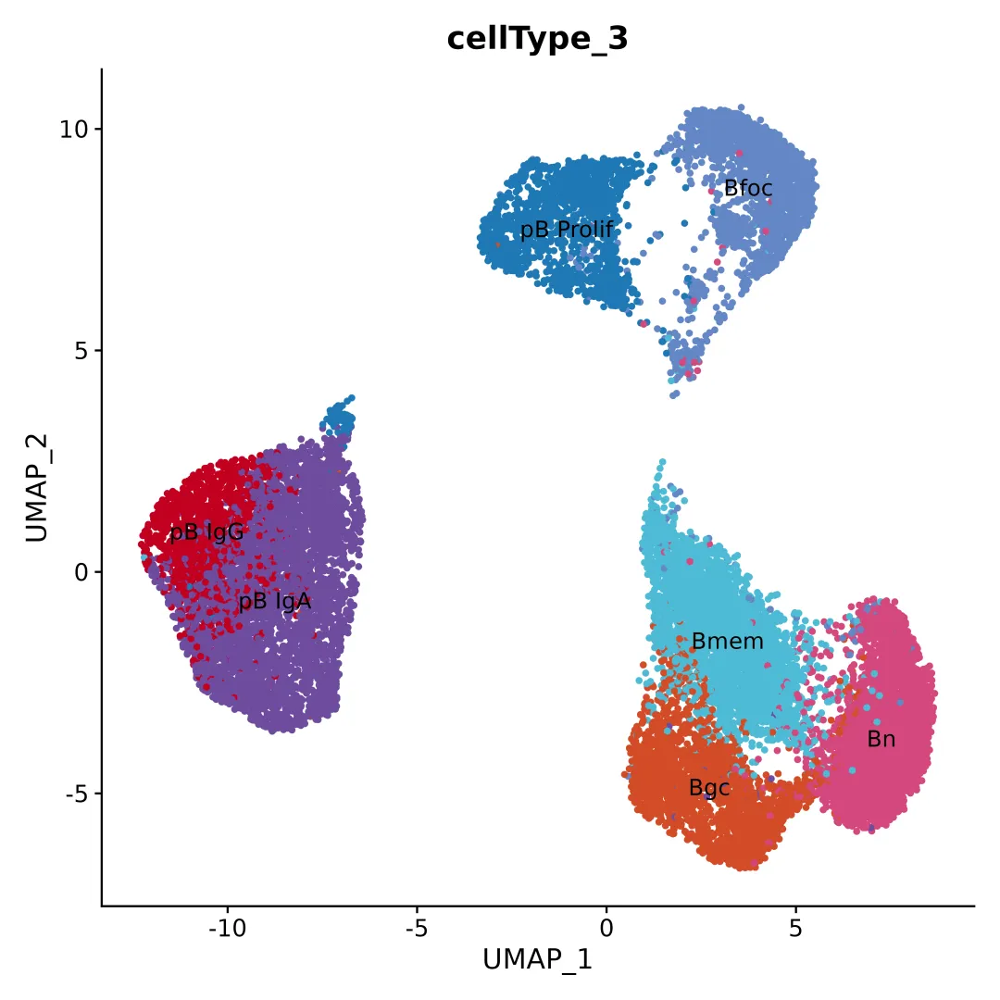
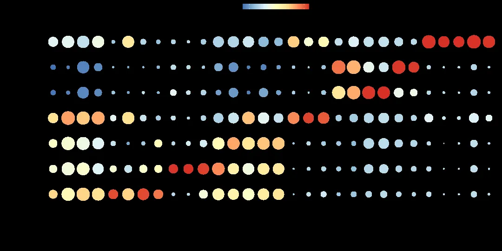
2.3 髓系细胞注释：
根据文章提供的 marker，注释出3类髓系细胞亚群，3个亚群中又分别注释出高表达某些基因的亚群。Marker基因以及注释结果如以下图表所示：
| CellType | Marker | CellType | Marker |
|---|---|---|---|
| Mono | FCN1;S100A8;S100A12 | IL1B+FCN1+ | IL1BFCN1 |
| DC | CD1C;LILRA4;CCL19CD14 (-) | CD1C+ cDCLLRA4+ pDCCCL19+ mDC | CD1CLLRA4CCL19 |
| Mac | CD68;CD163;FCN1 (-)S100A8(-);S100A12(-); | CALHM6+SPP1+FOLR2+TMSB4X+MKI67+ | CALHM6SPP1FOLR2TMSB4XMKI67 |
sub.myeloid <- readRDS("02.CellAnnote/cellAnnote.cellType_1.rds")
sub.myeloid <- subset(sub.myeloid,subset = cellType_1 == "Myeloid cell")
pdf("02.CellAnnote/Myeloid.cell/Myeloid.cell.harmony.pdf")
sub.myeloid.harmony <- Harmony.integration.reduceDimension(seurat.object = sub.myeloid, assay = "RNA", set.resolutions = seq(0.2, 1.2, by = 0.1), PC = 20, npcs = 30)
dev.off()
FeaturePlot(sub.myeloid.harmony,features = "percent.mt",cols = c("#1e90ff", "#ff5a36"))
Idents(sub.myeloid.harmony) <- 'seurat_clusters'
sub.myeloid.harmony.markers <- FindAllMarkers(sub.myeloid.harmony,only.pos = TRUE, min.pct = 0.25, logfc.threshold = 0.25)
sub.myeloid.harmony.markers %>%
group_by(cluster) %>%
slice_max(n = 2, order_by = avg_log2FC)
write.csv(sub.myeloid.harmony.markers,"02.CellAnnote/Myeloid.cell/sub.myeloid.harmony.markers.csv")
feature <- c("IL1B",
"PTGS2",
"VEGFA",
"FCN1",
"S100A8",
"S100A9",
"S100A12",
"CD1C",
"FCER1A",
"CLEC10A",
"LILRA4",
"CLIC3",
"CXCR3",
"CCL19",
"LAMP3",
"CCR7",
"CALHM6",
"VAMP5",
"LDHA",
"CHI3L1",
"SPP1",
"FBP1",
"MMP9",
"C1QC",
"FOLR2",
"SELENOP",
"C1QB",
"TMSB4X",
"YBX1",
"DNASE1L3",
"PCLAF",
"TYMS",
"UBE2C")
DotPlot(
sub.myeloid.harmony,
features = feature,
group.by = "cellType_3",
cols = "RdYlBu"
)+ theme(axis.text.x = element_text(angle = 90,hjust = 1,vjust = 0.5)) + scale_size_continuous(range = c(0,10))
cluster.label <- sub.myeloid.harmony@meta.data$seurat_clusters
cluster.label <- gsub("^0$", "Mac", cluster.label)
cluster.label <- gsub("^1$", "Mono", cluster.label)
cluster.label <- gsub("^2$", "Mono", cluster.label)
cluster.label <- gsub("^3$", "Mac", cluster.label)
cluster.label <- gsub("^4$", "DC", cluster.label)
cluster.label <- gsub("^5$", "unkown", cluster.label)
cluster.label <- gsub("^6$", "Mono", cluster.label)
cluster.label <- gsub("^7$", "unkown", cluster.label)
cluster.label <- gsub("^8$", "Mac", cluster.label)
cluster.label <- gsub("^9$", "unkown", cluster.label)
cluster.label <- gsub("^10$", "Mac", cluster.label)
cluster.label <- gsub("^11$", "Mac", cluster.label)
cluster.label <- gsub("^12$", "unkown", cluster.label)
cluster.label <- gsub("^13$", "Mac", cluster.label)
cluster.label <- gsub("^14$", "unkown", cluster.label)
cluster.label <- gsub("^15$", "Mac", cluster.label)
cluster.label <- gsub("^16$", "Mac", cluster.label)
cluster.label <- gsub("^17$", "DC", cluster.label)
cluster.label <- gsub("^18$", "unkown", cluster.label)
cluster.label <- gsub("^19$", "Mono", cluster.label)
cluster.label <- gsub("^20$", "DC", cluster.label)
cluster.label <- gsub("^21$", "unkown", cluster.label)
cluster.label <- gsub("^22$", "unkown", cluster.label)
cluster.label <- gsub("^23$", "unkown", cluster.label)
sub.myeloid.harmony <- AddMetaData(sub.myeloid.harmony, cluster.label, col.name = "cellType_2")
sub.myeloid.harmony <- subset(sub.myeloid.harmony, subset = seurat_clusters %in% c(0:4, 6,8,10:11,13,15:17,19,20))
sub.myeloid.harmony$seurat_clusters <- factor(sub.myeloid.harmony$seurat_clusters, levels = c(0:4, 6,8,10:11,13,15:17,19,20))
sub.myeloid.harmony$cellType_2 <- factor(sub.myeloid.harmony$cellType_2,c("Mono","DC","Mac"))
cluster.label <- sub.myeloid.harmony@meta.data$seurat_clusters
cluster.label <- gsub("^0$", "FOLR2+ Mac", cluster.label)
cluster.label <- gsub("^1$", "IL1B+ Mono", cluster.label)
cluster.label <- gsub("^2$", "FCN1+ Mono", cluster.label)
cluster.label <- gsub("^3$", "FOLR2+ Mac", cluster.label)
cluster.label <- gsub("^4$", "CD1C+ cDC", cluster.label)
cluster.label <- gsub("^5$", "unkown", cluster.label)
cluster.label <- gsub("^6$", "IL1B+ Mono", cluster.label)
cluster.label <- gsub("^7$", "unkown", cluster.label)
cluster.label <- gsub("^8$", "SPP1+ Mac", cluster.label)
cluster.label <- gsub("^9$", "unkown", cluster.label)
cluster.label <- gsub("^10$", "TMSB4X+ Mac", cluster.label)
cluster.label <- gsub("^11$", "FOLR2+ Mac", cluster.label)
cluster.label <- gsub("^12$", "unkown", cluster.label)
cluster.label <- gsub("^13$", "CALHM6+ Mac", cluster.label)
cluster.label <- gsub("^14$", "unkown", cluster.label)
cluster.label <- gsub("^15$", "MKI67+ Mac", cluster.label)
cluster.label <- gsub("^16$", "CALHM6+ Mac", cluster.label)
cluster.label <- gsub("^17$", "CCL19+ mDC", cluster.label)
cluster.label <- gsub("^18$", "unkown", cluster.label)
cluster.label <- gsub("^19$", "IL1B+ Mono", cluster.label)
cluster.label <- gsub("^20$", "LILR4A+ pDC", cluster.label)
cluster.label <- gsub("^21$", "unkown", cluster.label)
cluster.label <- gsub("^22$", "unkown", cluster.label)
cluster.label <- gsub("^23$", "unkown", cluster.label)
sub.myeloid.harmony <- AddMetaData(sub.myeloid.harmony, cluster.label, col.name = "cellType_3")
sub.myeloid.harmony <- subset(sub.myeloid.harmony, subset = seurat_clusters %in% c(0:4, 6,8,10:11,13,15:17,19,20))
sub.myeloid.harmony$seurat_clusters <- factor(sub.myeloid.harmony$seurat_clusters, levels = c(0:4, 6,8,10:11,13,15:17,19,20))
sub.myeloid.harmony$cellType_3 <- factor(sub.myeloid.harmony$cellType_3,c("IL1B+ Mono","FCN1+ Mono","CD1C+ cDC","LILR4A+ pDC","CCL19+ mDC",
"CALHM6+ Mac","SPP1+ Mac","FOLR2+ Mac","TMSB4X+ Mac","MKI67+ Mac"))
table(sub.myeloid.harmony@meta.data$cellType_3)
# IL1B+ Mono FCN1+ Mono CD1C+ cDC LILR4A+ pDC CCL19+ mDC CALHM6+ Mac SPP1+ Mac FOLR2+ Mac TMSB4X+ Mac MKI67+ Mac
# 640 1831 578 75 181 444 437 949 397 236
table(sub.myeloid.harmony@meta.data$cellType_2)
# Mono DC Mac
# 2471 834 2463
pdf("02.CellAnnote/Myeloid.cell/Myeloid.cellannoted.dimplot.pdf")
DimPlot(sub.myeloid.harmony,group.by = "cellType_3",label = T)+NoLegend()
dev.off()
png("02.CellAnnote/Myeloid.cell/Myeloid.cellannoted.dimplot.png")
DimPlot(sub.myeloid.harmony,group.by = "cellType_2",label = T)+NoLegend()
dev.off()
Idents(sub.myeloid.harmony) <- 'cellType_3'
sub.myeloid.harmony.markers <- FindAllMarkers(sub.myeloid.harmony,only.pos = TRUE, min.pct = 0.25, logfc.threshold = 0.25)
sub.myeloid.harmony.markers %>%
group_by(cluster) %>%
slice_max(n = 2, order_by = avg_log2FC)
write.csv(sub.myeloid.harmony.markers,"02.CellAnnote/Myeloid.cell/sub.myeloid.harmony.markers.csv")
saveRDS(sub.myeloid.harmony,"02.CellAnnote/Myeloid.cell/sub.myeloid.harmony.annonted.cellType2_3.rds")
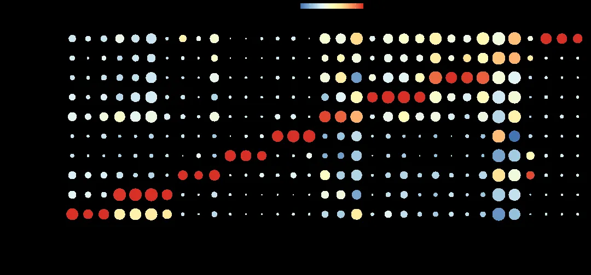
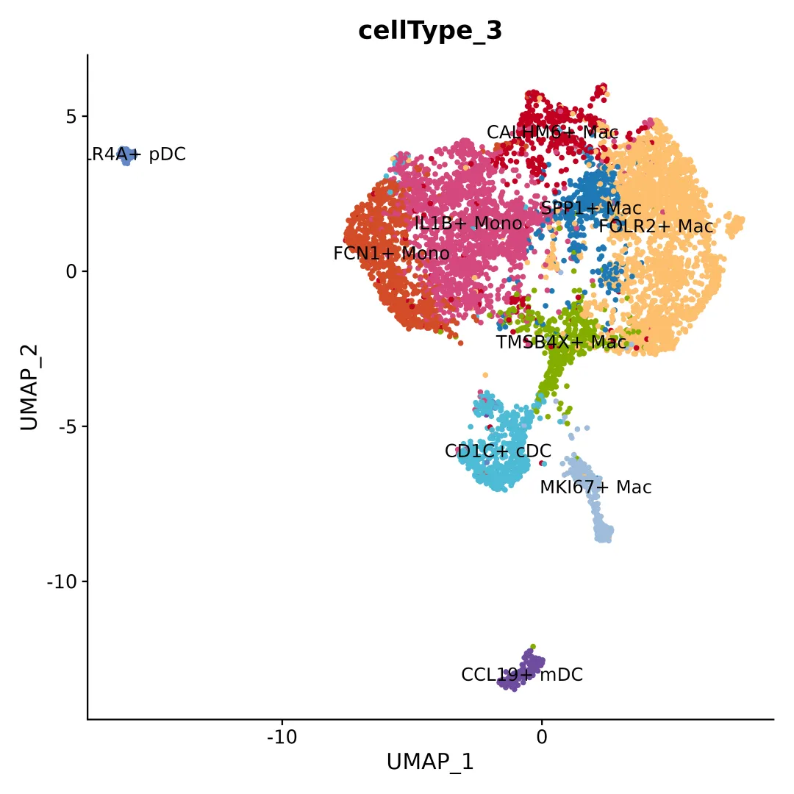
2.4 成纤维细胞注释：
根据文章提供的 marker，注释出成肌纤维细胞以及一些高表达某些基因的成纤维细胞。Marker 基因以及注释结果如下表所示：
| CellType | Marker | Marker | Marker | Marker | Marker | Marker | Marker | Marker |
|---|---|---|---|---|---|---|---|---|
| Myofibroblast | MYH11 | ACTA2 | MCAM | CAV1 | ||||
CCL2+ Fibroblast| CCL2| POSTN| WNT5A| COL3A1| TMEM158| CTHRC1| COL6A3| FAP CXCL12+ Fibroblast| CXCL12| CFD| MFAP5| IGFBP6| DCN| RSPO3| WNT2B|
sub.Fib <- readRDS("02.CellAnnote/cellAnnote.cellType_1.rds")
sub.Fib <- subset(sub.Fib,subset = cellType_1 == "Fibroblast cell")
pdf("02.CellAnnote/Fibroblast.cell/Fibroblast.cell.harmony.pdf")
sub.Fib.harmony <- Harmony.integration.reduceDimension(seurat.object = sub.Fib, assay = "RNA", set.resolutions = seq(0.2, 1.2, by = 0.1), PC = 20, npcs = 30)
dev.off()
feature <- c("MYH11",
"ACTA2",
"MCAM",
"CAV1",
"CXCL12",
"CFD",
"MFAP5",
"IGFBP6",
"DCN",
"RSPO3",
"WNT2B",
"CCL2",
"POSTN",
"WNT5A",
"COL3A1",
"TMEM158",
"CTHRC1",
"COL6A3",
"FAP")
DotPlot(sub.Fib.harmony,features = feature, group.by = "cellType_3",
cols = c("#1e90ff", "#ff5a36")
)+ theme(axis.text.x = element_text(angle = 90,hjust = 1,vjust = 0.5))
# pdf("02.CellAnnote/Fibroblast.cell/Fibroblast.cell.featureplot.pdf", height = 20)
# FeaturePlot(
# sub.Fib.harmony,
# features = c(
# "MYH11",
# "ACTA2",
# "MCAM",
# "CAV1"
# ),
# ncol = 1,
# cols = c("lightgrey", "red")
# )
# dev.off()
cluster.label <- sub.Fib.harmony@meta.data$RNA_snn_res.0.2
cluster.label <- gsub("^0$", "Myofibroblast", cluster.label)
cluster.label <- gsub("^1$", "Fibroblast", cluster.label)
cluster.label <- gsub("^2$", "Fibroblast", cluster.label)
cluster.label <- gsub("^3$", "Myofibroblast", cluster.label)
cluster.label <- gsub("^4$", "unkown", cluster.label)
cluster.label <- gsub("^5$", "Fibroblast", cluster.label)
cluster.label <- gsub("^6$", "unkown", cluster.label)
cluster.label <- gsub("^7$", "unkown", cluster.label)
cluster.label <- gsub("^8$", "unkown", cluster.label)
cluster.label <- gsub("^9$", "unkown", cluster.label)
cluster.label <- gsub("^10$", "unkown", cluster.label)
cluster.label <- gsub("^11$", "unkown", cluster.label)
cluster.label <- gsub("^12$", "unkown", cluster.label)
sub.Fib.harmony <- AddMetaData(sub.Fib.harmony, cluster.label, col.name = "cellType_2")
sub.Fib.harmony <- subset(sub.Fib.harmony, subset = RNA_snn_res.0.2 %in% c(0:3,5))
sub.Fib.harmony$RNA_snn_res.0.2 <- factor(sub.Fib.harmony$RNA_snn_res.0.2, levels = c(0:3,5))
cluster.label <- sub.Fib.harmony@meta.data$RNA_snn_res.0.2
cluster.label <- gsub("^0$", "Myofibroblast", cluster.label)
cluster.label <- gsub("^1$", "CXCL12+ Fibro", cluster.label)
cluster.label <- gsub("^2$", "CCL2+ Fibro", cluster.label)
cluster.label <- gsub("^3$", "Myofibroblast", cluster.label)
cluster.label <- gsub("^4$", "unkown", cluster.label)
cluster.label <- gsub("^5$", "CCL2+ Fibro", cluster.label)
cluster.label <- gsub("^6$", "unkown", cluster.label)
cluster.label <- gsub("^7$", "unkown", cluster.label)
cluster.label <- gsub("^8$", "unkown", cluster.label)
cluster.label <- gsub("^9$", "unkown", cluster.label)
cluster.label <- gsub("^10$", "unkown", cluster.label)
cluster.label <- gsub("^11$", "unkown", cluster.label)
cluster.label <- gsub("^12$", "unkown", cluster.label)
sub.Fib.harmony <- AddMetaData(sub.Fib.harmony, cluster.label, col.name = "cellType_3")
sub.Fib.harmony <- subset(sub.Fib.harmony, subset = RNA_snn_res.0.2 %in% c(0:3,5))
sub.Fib.harmony$RNA_snn_res.0.2 <- factor(sub.Fib.harmony$RNA_snn_res.0.2, levels = c(0:3,5))
table(sub.Fib.harmony@meta.data$cellType_2)
Idents(sub.Fib.harmony) <- 'cellType_3'
sub.Fib.harmony.markers <- FindAllMarkers(sub.Fib.harmony,only.pos = TRUE, min.pct = 0.25, logfc.threshold = 0.25)
sub.Fib.harmony.markers %>%
group_by(cluster) %>%
slice_max(n = 2, order_by = avg_log2FC)
write.csv(sub.Fib.harmony.markers,"02.CellAnnote/Fibroblast.cell/sub.Fib.harmony.markers.csv")
saveRDS(sub.Fib.harmony,"02.CellAnnote/Fibroblast.cell/Fibroblast.annonted.cellType2-3.rds")
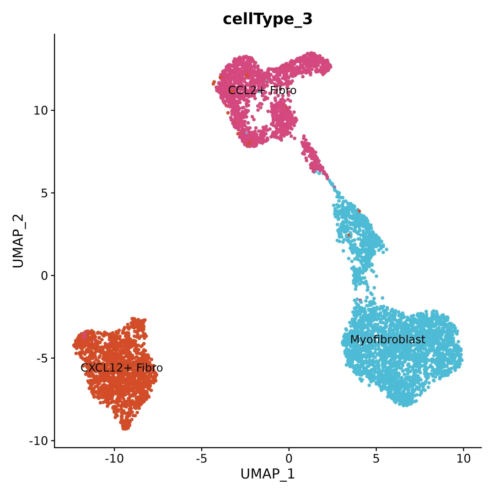
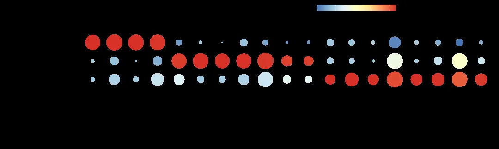
2.5 内皮细胞注释：
根据文章提供的 marker，注释出 3 类内皮细胞亚群及其对应的高表达基因亚群。Marker 基因以及注释结果如下表所示：
| CellType | Marker | Marker | Marker | CellType |
|---|---|---|---|---|
| EC | CXCL12;PLVAP;SYNE2;HLA-DRA | |||
| CXCL12+;PLVAP+;SYNE2+;HLA-DRA+ | ||||
| LEC | LYVE1 | CCL21 | PRO | LYVE1+ |
| HEV | MADCAM1 | ACKR1 | ||
| MADCAM1+ |
sub.End <- readRDS("02.CellAnnote/cellAnnote.cellType_1.rds")
sub.End <- subset(sub.End,subset = cellType_1 == "Endothelial cell")
pdf("02.CellAnnote/Endothelial.cell/Endothelial.cell.harmony.pdf")
sub.End.harmony <- Harmony.integration.reduceDimension(seurat.object = sub.End, assay = "RNA", set.resolutions = seq(0.2, 1.2, by = 0.1), PC = 20, npcs = 30)
dev.off()
feature <- c("CXCL12",
"SULF1",
"SEMA3G",
"GJA5",
"IGFBP3",
"PLVAP",
"PLPP3",
"COL4A1",
"COL4A2",
"COL15A1",
"IL32",
"SYNE2",
"ARGLU1",
"WSB1",
"N4BP2L2",
"ACKR1",
"SOCS3",
"GADD45B",
"HLA-DRA",
"ZFP36",
"CCL21",
"LYVE1",
"PROX1",
"TFF3",
"AKAP12",
"CPE",
"MADCAM1",
"ADGRG6",
"CLDN5")
DotPlot(sub.End.harmony,features = feature, group.by = "seurat_clusters",
cols = c("#1e90ff", "#ff5a36")
)+ theme(axis.text.x = element_text(angle = 90,hjust = 1,vjust = 0.5))
cluster.label <- sub.End.harmony@meta.data$seurat_clusters
cluster.label <- gsub("^0$", "EC", cluster.label)
cluster.label <- gsub("^1$", "HEV", cluster.label)
cluster.label <- gsub("^2$", "EC", cluster.label)
cluster.label <- gsub("^3$", "EC", cluster.label)
cluster.label <- gsub("^4$", "EC", cluster.label)
cluster.label <- gsub("^5$", "EC", cluster.label)
cluster.label <- gsub("^6$", "EC", cluster.label)
cluster.label <- gsub("^7$", "EC", cluster.label)
cluster.label <- gsub("^8$", "EC", cluster.label)
cluster.label <- gsub("^9$", "LEC", cluster.label)
cluster.label <- gsub("^10$", "EC", cluster.label)
cluster.label <- gsub("^11$", "EC", cluster.label)
cluster.label <- gsub("^12$", "EC", cluster.label)
cluster.label <- gsub("^13$", "unkown", cluster.label)
cluster.label <- gsub("^14$", "unkown", cluster.label)
cluster.label <- gsub("^15$", "unkown", cluster.label)
cluster.label <- gsub("^16$", "HEV", cluster.label)
cluster.label <- gsub("^17$", "unkown", cluster.label)
cluster.label <- gsub("^18$", "EC", cluster.label)
cluster.label <- gsub("^19$", "EC", cluster.label)
cluster.label <- gsub("^20$", "unkown", cluster.label)
sub.End.harmony <- AddMetaData(sub.End.harmony, cluster.label, col.name = "cellType_2")
sub.End.harmony <- subset(sub.End.harmony, subset = seurat_clusters %in% c(0:12,16,18,19))
sub.End.harmony$seurat_clusters <- factor(sub.End.harmony$seurat_clusters, levels = c(0:12,16,18,19))
DimPlot(sub.End.harmony,group.by = "cellType_2",label = T)+NoLegend()
cluster.label <- sub.End.harmony@meta.data$seurat_clusters
cluster.label <- gsub("^0$", "HLA-DRA+ EC", cluster.label)
cluster.label <- gsub("^1$", "MADCAM1+ HEV", cluster.label)
cluster.label <- gsub("^2$", "PLVAP+ EC", cluster.label)
cluster.label <- gsub("^3$", "PLVAP+ EC", cluster.label)
cluster.label <- gsub("^4$", "CXCL12+ EC", cluster.label)
cluster.label <- gsub("^5$", "HLA-DRA+ EC", cluster.label)
cluster.label <- gsub("^6$", "SYNE2+ EC", cluster.label)
cluster.label <- gsub("^7$", "HLA-DRA+ EC", cluster.label)
cluster.label <- gsub("^8$", "SYNE2+ EC", cluster.label)
cluster.label <- gsub("^9$", "LYVE1+ LEC", cluster.label)
cluster.label <- gsub("^10$", "HLA-DRA+ EC", cluster.label)
cluster.label <- gsub("^11$", "PLVAP+ EC", cluster.label)
cluster.label <- gsub("^12$", "HLA-DRA+ EC", cluster.label)
cluster.label <- gsub("^13$", "unkown", cluster.label)
cluster.label <- gsub("^14$", "unkown", cluster.label)
cluster.label <- gsub("^15$", "unkown", cluster.label)
cluster.label <- gsub("^16$", "MADCAM1+ HEV", cluster.label)
cluster.label <- gsub("^17$", "unkown", cluster.label)
cluster.label <- gsub("^18$", "PLVAP+ EC", cluster.label)
cluster.label <- gsub("^19$", "PLVAP+ EC", cluster.label)
cluster.label <- gsub("^20$", "unkown", cluster.label)
sub.End.harmony <- AddMetaData(sub.End.harmony, cluster.label, col.name = "cellType_3")
sub.End.harmony <- subset(sub.End.harmony, subset = seurat_clusters %in% c(0:12,16,18,19))
sub.End.harmony$seurat_clusters <- factor(sub.End.harmony$seurat_clusters, levels = c(0:12,16,18,19))
sub.End.harmony$cellType_3 <- factor(sub.End.harmony$cellType_3,c("CXCL12+ EC","PLVAP+ EC","SYNE2+ EC","HLA-DRA+ EC","LYVE1+ LEC","MADCAM1+ HEV"))
DimPlot(sub.End.harmony,group.by = "cellType_3",label = T)+NoLegend()
DotPlot(sub.End.harmony,features = feature, group.by = "cellType_3",
cols = c("#1e90ff", "#ff5a36")
)+ theme(axis.text.x = element_text(angle = 90,hjust = 1,vjust = 0.5))
Idents(sub.End.harmony) <- 'cellType_3'
sub.End.harmony.markers <- FindAllMarkers(sub.End.harmony,only.pos = TRUE, min.pct = 0.25, logfc.threshold = 0.25)
sub.End.harmony.markers %>%
group_by(cluster) %>%
slice_max(n = 2, order_by = avg_log2FC)
write.csv(sub.End.harmony.markers,"02.CellAnnote/Endothelial.cell/sub.End.harmony.markers.csv")
saveRDS(sub.End.harmony,"02.CellAnnote/Endothelial.cell/sub.End.harmony.annonted.cellType2_3.rds")
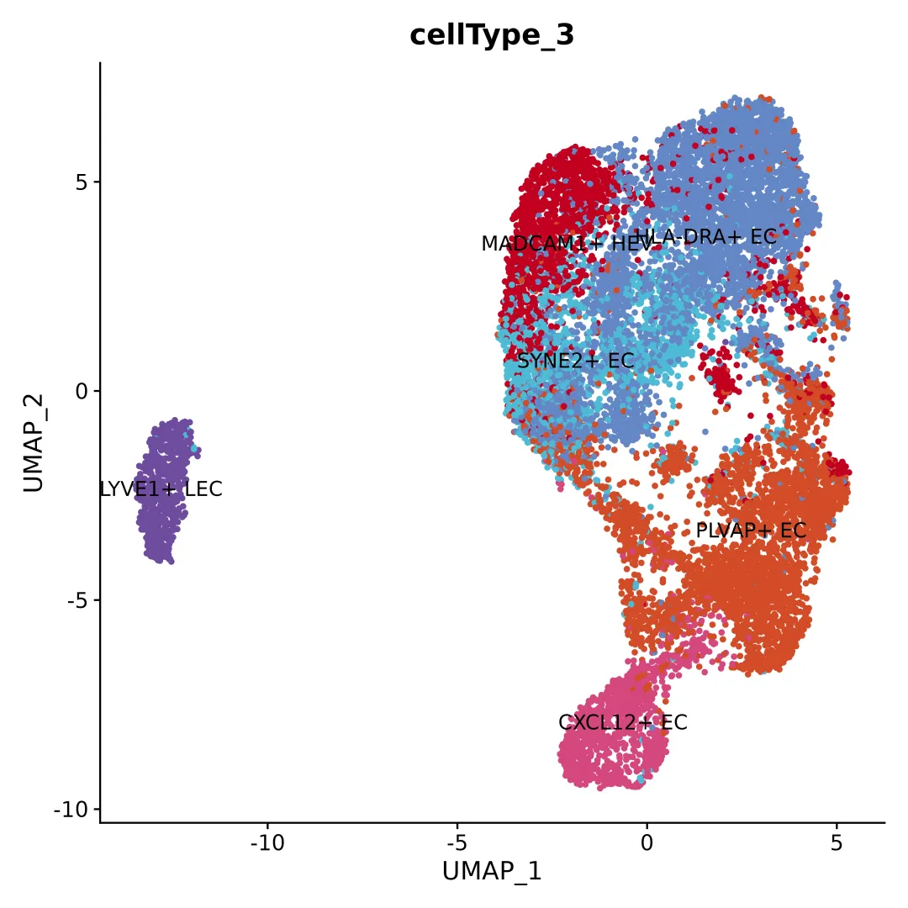
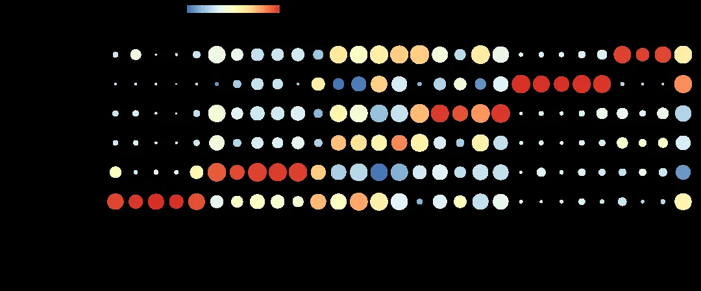
01
二、测试文件及代码
如果你也想学习本文的代码和思路，我们给大家准备好了测试文件和代码。
链接：https://pan.baidu.com/s/1EdlK5FB0zcy3QvHqmWRbcQ?pwd=vzur
提取码：vzur
02
三、合作方介绍
本次活动由Biomamba生信基地 组织主办、北京寻因生物科技 有限公司独家冠名、科研者之家、西柚云超算联合赞助，设立总价值约50W 的科研助力基金。 北京寻因生物科技有限公司：
北京寻因生物科技有限公司（简称寻因生物）成立于2018年，秉承“用技术温暖生命，预见未来”的企业愿景，致力于全球单细胞市场标准普世化发展，推动单细胞技术在早筛、临床、药研等应用方向的深耕落地，为全球科学家、技术公司及药企工业等客户提供可信赖的高品质单细胞技术服务及实验室建设解决方案。
科研者之家：
科研者之家（www.home-for-researchers）是目前国内最知名的科研工具箱平台，以“科研不停，神器不止”为理念，自2019年上线以来，多款工具火爆科研界，如AI写作助手、Figdraw在线绘图平台、生信零代码平台、AI润色、DLP一键改写降重、中文版Pubmed、课题思路助手等。截止目前，包括Nature，Advanced Materials等顶级期刊在内，科研者之家相关科研工具被论文引用已超2300次之多。
西柚云超算：
西柚云是一家专注于科研共享计算的云服务基建型公司。于2022年推出独立研发的大禹共享型计算系统，具有实例动态迁移（拒绝传统型共享服务器单节点卡顿）、开箱即用的生信环境、每个用户拥有独立的实例和root权限等特性。
03
四、往期作品回顾
干细胞样CD4+ T细胞与自身免疫性血管炎 结直肠癌免疫图谱中的基因表达程序 MLP模型鉴定免疫细胞发育和瘤内T细胞耗竭的单细胞染色质图谱 T Cell单细胞参考图谱 小鼠纹状体单细胞基因变化图谱 人类肾脏snRNA-seq图谱拟时序分析 CellRank的教程重现 胶质瘤相关巨噬细胞scRNA图谱 肝癌单细胞分群marker scRNA揭示T1D骨髓与骨质减少的关系 微环境中肿瘤免疫屏障决定了免疫治疗的效果肝脏发育、成熟的单细胞图谱 胰腺导管腺癌的内异质性和恶性进展scRNA-seq图谱 人类肾脏scRNA-seq图谱 小鼠与人类的空间表观单细胞图谱 疟疾中免疫细胞亚群的调控响应 儿童白血病的单细胞数据读取小鼠脑动脉瘤模型的scRNA-Seq分析
04
**本次活动最终解释权归主办方所有!******主办方拥有对作品的编辑、宣发权利!

如何联系我们

 公众号后台消息回复不便，这里给大家留一下领取资料及免费服务器(足够支持你完成硕博生涯的生信环境)的微信号 ，方便各位随时交流、提建议（科研任务繁重，回复不及时请见谅）。此外呼声一直很高的交流群 也建好了，欢迎大家入群讨论：
公众号后台消息回复不便，这里给大家留一下领取资料及免费服务器(足够支持你完成硕博生涯的生信环境)的微信号 ，方便各位随时交流、提建议（科研任务繁重，回复不及时请见谅）。此外呼声一直很高的交流群 也建好了，欢迎大家入群讨论：
大家可以阅读完这几篇之后添加给生信入门初学者的小贴士 如何搜索公众号过往发布内容

 您点的每个赞和在看，我都认真当成了喜欢
您点的每个赞和在看，我都认真当成了喜欢